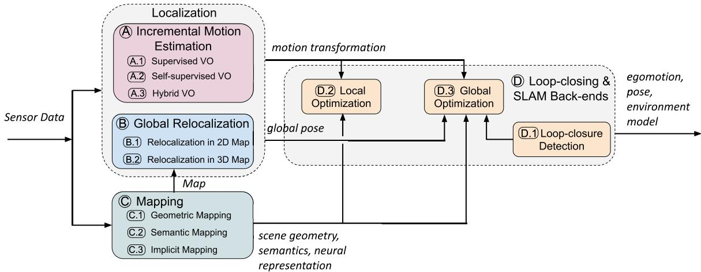
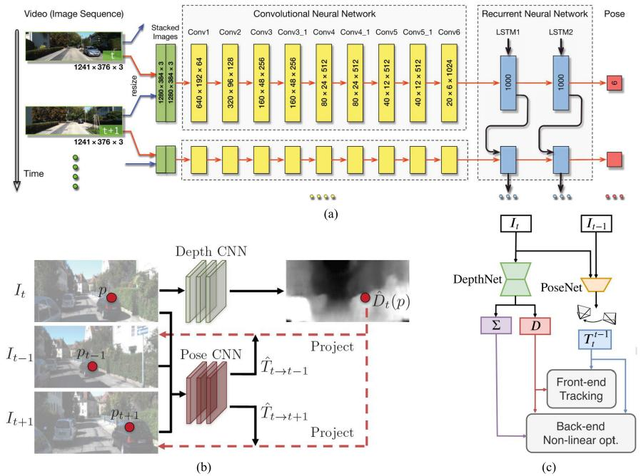
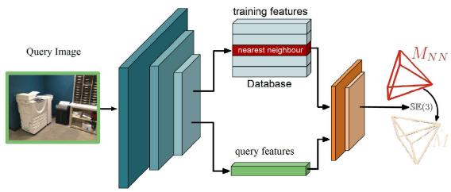
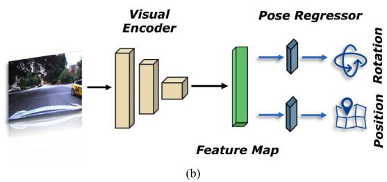
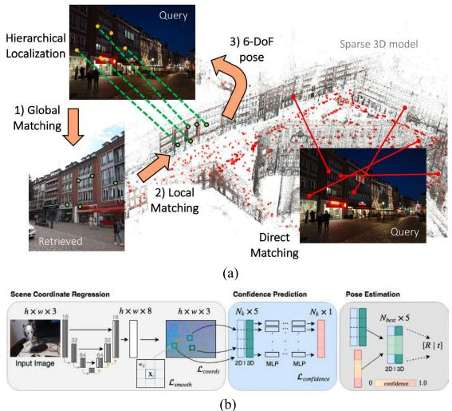
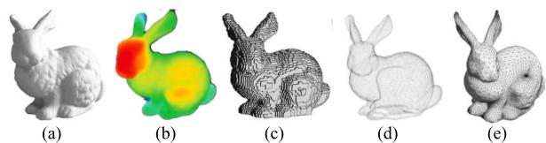

Deep Learning for Visual Localization and Mapping: A Survey
Changhao Chen , Bing Wang, Chris Xiaoxuan Lu , Niki Trigoni , and Andrew Markham
Abstract— Deep-learning-based localization and mapping approaches have recently emerged as a new research direction and receive significant attention from both industry and academia. Instead of creating hand-designed algorithms based on physical models or geometric theories, deep learning solutions provide an alternative to solve the problem in a data-driven way. Benefiting from the ever-increasing volumes of data and computational power on devices, these learning methods are fast evolving into a new area that shows potential to track self-motion and estimate environmental models accurately and robustly for mobile agents. In this work, we provide a comprehensive survey and propose a taxonomy for the localization and mapping methods using deep learning. This survey aims to discuss two basic questions: whether deep learning is promising for localization and mapping, and how deep learning should be applied to solve this problem. To this end, a series of localization and mapping topics are investigated, from the learning-based visual odometry and global relocalization to mapping, and simultaneous localization and mapping (SLAM). It is our hope that this survey organically weaves together the recent works in this vein from robotics, computer vision, and machine learning communities and serves as a guideline for future researchers to apply deep learning to tackle the problem of visual localization and mapping.
Index Terms— Deep learning, global localization, visual odometry (VO), visual simultaneous localization and mapping (SLAM), visual-inertial odometry (VIO).
I. INTRODUCTION
OCALIZATION and mapping serve as essential requiremotivating example, humans possess the remarkable ability to perceive their own motion and the surrounding environment through multisensory perception. They heavily rely on this awareness to determine their location and navigate through intricate 3-D spaces. In a similar vein, mobile agents, encompassing a diverse range of robots such as self-driving vehicles, delivery drones, and home service robots, must possess the capability to perceive their environment and estimate positional states through onboard sensors. These agents actively engage in sensing their surroundings and autonomously make decisions [1]. Equivalently, the integration of emerging technologies such as augmented reality (AR) and virtual reality (VR) intertwines the virtual and physical realms, making it imperative for machines to possess perceptual awareness. This awareness forms the foundation for seamless interaction between humans and machines. Furthermore, the applications of these concepts extend to mobile and wearable devices, such as smartphones, wristbands, and Internet-of-Things (IoT) devices. These devices offer a wide array of location-based services, ranging from pedestrian navigation and sports/activity monitoring to emergency response.
Enabling a high level of autonomy for these and other digital agents requires precise and robust localization while incrementally building and maintaining a world model, with the capability to continuously process new information and adapt to various scenarios. In this work, localization broadly refers to the ability to obtain internal system states of robot motion, including locations, orientations, and velocities, while mapping indicates the capacity to perceive external environmental states, including scene geometry, appearance, and semantics. They can act individually to sense internal or external states, respectively, or can operate jointly as a simultaneous localization and mapping (SLAM) system.
The problem of localization and mapping has been studied for decades, with a range of algorithms and systems being developed, for example, visual odometry (VO) [2], visualinertial odometry (VIO) [3], image-based relocalization [4], place recognition [5], and SLAM [6]. These algorithms and systems have demonstrated their efficacy in supporting a wide range of real-world applications, such as delivery robots, selfdriving vehicles, and VR devices. However, the deployment of these systems is not without challenges. Factors such as imperfect sensor measurements, dynamic scenes, adverse lighting conditions, and real-world constraints somewhat hinder their practical implementation. In light of these limitations, recent advancements in machine learning, particularly deep learning, have prompted researchers to explore data-driven approaches as an alternative solution. Unlike conventional model-based approaches that rely on concrete and explicit algorithms tailored to specific application domains, learningbased methods leverage the power of deep neural networks (DNNs) to extract features and construct implicit neural models. By training these networks on large datasets, they learn to obtain the ability to generate poses and describe scenes, even in challenging environments such as those characterized by high dynamics and poor lighting conditions.

Fig. 1. Taxonomy of deep-learning-based visual localization and mapping. Individual modules can be integrated together into a complete deep-learning-based SLAM system. It is not mandatory to include all modules for the system to function effectively. In the diagram, rounded rectangles represent function modules and arrow lines depict the connections between these modules for data input and output.
Consequently, deep-learning-based localization and mapping methods exhibit good robustness and accuracy compared to their traditional counterparts. Deep-learning-based localization and mapping remain active areas of research, and further investigations are necessary to fully understand the strengths and limitations of different approaches.
In this article, we extensively review the existing deeplearning-based visual localization and mapping approaches, and try to explore the answers to the following two questions.
1) Is deep learning promising for visual localization and mapping?
2) How can deep learning be applied to solve the problem of visual localization and mapping?
The two questions will be revisited by the end of this survey. As vision is the major information source for most mobile agents, this work will focus on vision-based solutions. The field of deep-learning-based localization and mapping is still relatively new, and there are a growing number of different approaches and techniques that have been proposed in recent years. Notably, although the problem of localization and mapping falls into the key notion of robotics, the incorporation of learning methods progresses in tandem with other research areas, such as machine learning, computer vision, and even natural language processing. This cross-disciplinary area, thus, imposes nontrivial difficulty when comprehensively summarizing related works into a survey paper. We hope that our survey can help to promote collaboration and knowledge sharing within the research community, foster new ideas, and facilitate interdisciplinary research on deep-learning-based localization and mapping. In addition, this survey can help to identify key research challenges and open problems in the field, guide future research efforts, and provide guidance for researchers and practitioners who are interested in using deep learning solutions in their works. To the best of our knowledge, this is the first survey article that thoroughly and extensively covers existing work on deep learning for visual localization and mapping.
As an established field, the development of the SLAM problem has been well summarized by several survey papers in the literature [8], [14], with their focus lying in the conventional model-based localization and mapping approaches. The seminal survey [11] provides a thorough discussion of existing SLAM works, reviews the history of development, and charts several future directions. Although this article contains a section that briefly discusses deep learning models, it does not overview this field comprehensively, especially due to the explosion of research in this area over the past five years. Other SLAM survey papers only focus on individual flavors of SLAM systems, including the probabilistic formulation of SLAM [7], VO [10], pose-graph SLAM [9], and SLAM in dynamic environments [12]. We refer readers to these surveys for a better understanding of the conventional solutions to SLAM systems. On the other hand, [1] has a discussion on the applications of deep learning to robotics research; however, its main focus is not on localization and mapping specifically but a more general perspective toward the potentials and limits of deep learning in a broad context of robotic policy learning, reasoning, and planning. A recent survey [13] discusses deep-learning-based perception and navigation. Compared to [13] that throws a broader view on environment perception, motion estimation, and reinforcement learning-based control for autonomous systems, we provide a more comprehensive review and deep analysis of odometry estimation, relocalization, mapping, and other aspects of visual SLAM.
II. TAXONOMY OF EXISTING APPROACHES
From the perspective of learning approaches, we provide a taxonomy of existing deep-learning-based visual localization and mapping to connect the fields of robotics, computer vision, and machine learning. Based on their main technical contributions toward a complete SLAM system, related approaches can be broadly categorized into four main types in our context: incremental motion estimation (VO), global relocalization, mapping, and loop closing and SLAM back ends, as illustrated by the taxonomy shown in Fig. 1:
A. Incremental Motion Estimation
It concerns the calculation of the incremental change in pose, in terms of translation and rotation, between two or more frames of sensor data. It continuously tracks self-motion and is followed by a process to integrate these pose changes with respect to an initial state to derive a global pose. Incremental motion estimation, i.e., VO, can be used in providing pose information in a scenario without a prebuilt map or as an odometry motion model to assist the feedback loop of robot control. Deep learning is applied to estimate motion transformations from various sensor measurements in an end-to-end fashion or extract useful features to support a hybrid system.
TABLE I
SUMMARY OF DEEP-LEARNING-BASED VO (INCREMENTAL MOTION ESTIMATION) METHODS (SEE SECTION III)
| Model | Year | Sensor | Scale | Performance Seq09 | Seq10 | Contributions | ||
| Konda et al. [18] Costante et al. [19] | 2015 2016 | MC MC | Yes | 21.23 | formulate VO as a classification problem extract features from optical flow for VO estimates | |||
| MC | Yes | 6.75 | combine RNN and ConvNet for end-to-end learning | |||||
| DeepVO [15] | 2017 | Yes | 8.11 4.38 | generate dense 3D flow for VO and mapping | ||||
| Zhao et al. [23] | 2018 | MC | Yes | |||||
| Saputra et al. [24] | 2019 | MC | Yes | 8.29 3.47 | ||||
| Xue et al. [25] | 2019 | MC | Yes | curriculum learning and geometric loss constraints memory and refinement module | ||||
| Saputra et al. [26] | 2019 | MC | Yes | knowledge distilling to compress deep VO model | ||||
| Koumis et al. [27] | 2019 | MC | Yes | 3D convolutional networks | ||||
| DAVO [28] | 2020 | MC | Yes | 5.37 Use attention to weight semantics and optical flow | ||||
| SfmLearner [16] | 2017 | MC | No | 17.84 | 37.91 | |||
| Self-supervised | UnDeepVO [29] | 2018 | SC | Yes | 7.01 | 10.63 | use fixed stereo line to recover scale metric | |
| GeoNet [30] | 2018 | MC | No | 43.76 | 35.6 | geometric consistency loss and 2D flow generator | ||
| Zhan et al. [31] | 2018 | SC | Yes | 11.92 | 12.45 | use fixed stereo line for scale recovery | ||
| Struct2Depth [32] | 2019 | MC | No | 10.2 | 28.9 | introduce 3D geometry structure during learning | ||
| GANVO [33] | 2019 | MC | No | adversarial learning to generate depth | ||||
| Wang et al. [34] | 2019 | MC | Yes | 9.30 | 7.21 | integrate RNN and flow consistency constraint | ||
| Li et al. [35] | 2019 | MC | No | global optimization for pose graph | ||||
| Gordon [36] | 2019 | MC | No | 2.7 | 6.8 | camera matrix learning | ||
| Bian et al. [37] | 2019 | MC | No | 11.2 | 10.1 | consistent scale from monocular images | ||
| Li et al. [38] | 2020 | MC | No | 5.89 | 4.79 | meta learning to adapt into new environment | ||
| Zou et al. [39] | 2020 | MC | No | 3.49 | 5.81 | model the long-term dependency | ||
| Zhao et al. [40] | 2021 | MC | No | 8.71 | 9.63 | introduce masked GAN to remove inconsistency | ||
| Chi et al. [41] | 2021 | MC | No | 2.02 | 1.81 | collaborative learning of optical flow, depth and motion | ||
| Li et al. [42] | 2021 | MC | No | 1.87 | 1.93 | online adaptation | ||
| Sun et al. [40] | 2022 | MC | No | 7.14 | 7.72 | introduce cover and filter masks | ||
| Dai et al. [43] | 2022 | MC | No | 3.24 | 1.03 | introduce attention and pose graph optimization | ||
| VRVO [44] | 2022 | MC | Yes | 1.55 | 2.75 | use virtual data to recover scale | ||
| Hybrid | Backprop KF [45] | 2016 | MC | Yes | a differentiable Kalman filter based VO introduce learned depth to recover scale metric | |||
| Yin et al. [46] | 2017 | MC | Yes | 4.14 | 1.70 | |||
| Barnes et al. [47] | 2018 | MC | Yes | integrate learned depth and ephemeral masks | ||||
| DPF [48] | 2018 | MC | Yes | a differentiable particle filter based VO | ||||
| Yang et al. [49] | 2018 | MC | Yes | 0.83 | 0.74 | use learned depth into classical VO | ||
| CNN-SVO [50] | 2019 | MC | Yes | 10.69 | 4.84 | use learned depth to initialize SVO | ||
| Zhan et al. [51] | 2020 | MC | Yes | 2.61 | 2.29 | integrate learned optical flow and depth | ||
| Wagstaff et al. [52] | 2020 | MC | Yes | 2.82 | 3.81 | integrate classical VO with learned pose corrections | ||
| D3VO [17] | 2020 | MC | Yes | 0.78 | 0.62 | integrate learned depth, uncertainty and pose | ||
| Sun et al. [53] | 2022 | MC | Yes | integrate learned depth into DSO | ||||
• Year indicates the publication year (e.g. the date of conference) of each work.
• Sensor: MC and SC represent monocular camera and stereo camera respectively
• Supervision represents whether it is a supervised or unsupervised end-to-end model, or a hybrid model
• Scale indicates whether a trajectory with a global scale can be produced.
• Performance reports the localization error (a small number is better), i.e. the averaged translational RMSE drift (%) on lengths of 100m-800m on the KITTI odometry dataset [22]. Most works were evaluated on the Sequence 09 and 10, and thus we took the results on these two sequences from their original papers for a performance comparison. Note that the training sets may be different in each work.
B. Global Relocalization
It retrieves the global pose of mobile agents in a known scene with prior knowledge. This is achieved by matching the inquiry input data with a prebuilt map or other spatial references. It can be leveraged to reduce the pose drift of a dead reckoning system or retrieve the absolute pose when motion tracking is lost [7]. Deep learning is used to tackle the tricky data association problem that is complicated by the changes in views, illumination, weather, and scene dynamics, between the inquiry data and map.
C. Mapping
It builds and reconstructs a consistent environmental model to describe the surroundings. Mapping can be used to provide environment information for human operators or highlevel robot tasks, constrain the error drifts of self-motion tracking, and retrieve the inquiry observation for global localization [11]. Deep learning is leveraged as a useful tool to discover scene geometry and semantics from high-dimensional raw data for mapping. Deep-learning-based mapping methods are subdivided into geometric, semantic, and implicit mapping, depending on whether the neural network learns the explicit geometry, or semantics of a scene, or encodes the scene into implicit neural representation.
D. Loop Closing and SLAM Back Ends
They detect loop closures and optimize the aforementioned incremental motion estimation, global localization, and mapping modules to boost the performance of an SLAM system. These modules perform to ensure the consistency of the entire system as follows: local optimization ensures the local consistency of camera motion and scene geometry; once a loop closure is detected by the loop-closing module, system error drifts can be mitigated by global optimization.
Besides the modules mentioned above, other modules that also contribute to an SLAM system include the following.

Fig. 2. Typical structure of supervised learning of VO (reprint from DeepVO [15]), self-supervised learning of VO (reprint from SfmLearner [16]), and hybrid VO (reprint from D3VO [17]). (a) Supervised learning approaches. (b) Self-supervised learning approaches. (c) Hybrid approaches.
III. INCREMENTAL MOTION ESTIMATION
We begin with incremental motion (odometry) estimation, i.e., VO, which continuously tracks camera egomotion and yields motion transformations. Given an initial state, global trajectories are reconstructed by integrating these incremental poses. Thus, it is critical to keep the estimate of each motion transformation accurate enough to ensure high-prevision localization on a global scale. This section presents deep learning approaches to achieve VO.
Deep learning is capable of extracting high-level feature representations from raw images directly and, thereby, provides an alternative to solve VO problems, without requiring handcrafted feature detectors. Existing deep-learning-based VO models can be categorized into end-to-end VO and hybrid VO, depending on whether they are purely DNN-based or a combination of classical VO algorithms and DNNs. Depending on the availability of ground-truth labels in the training phase, end-to-end VO systems are further classified into supervised VO and unsupervised VO. Table I lists and compares deeplearning-based VO methods.
A. Supervised Learning of Visual Odometry
Supervised learning-based VO methods aim to train a DNN model on labeled datasets to construct a function from consecutive images to motion transformations, instead of exploiting the geometric structures of images as in conventional VO algorithms [10]. At its most basic, the input to the DNN consists of a pair of consecutive images, while the output corresponds to the estimated translation and rotation between the two frames of images.
One of the early works in this area is [18]. Their approach formulates VO as a classification problem and predicts the discrete changes of direction and velocity from input images using a convolutional neural network (ConvNet). However, this method is limited in its ability to estimate the full camera trajectory and relies on a series of discrete motion estimates instead. Costante et al. [19] propose a method that overcomes some of the limitations of the Konda and Memisevic [18] approach by using dense optical flow to extract visual features and then using a ConvNet to estimate the frame-to-frame motion of the camera. This method shows performance improvements over the Konda and Memisevic approach and can generate smoother and more accurate camera trajectories. Despite the promising results of both approaches, they are not strictly an end-to-end learning model from images to motion estimates and still fall short of traditional VO algorithms, e.g., VISO2 [20], in terms of accuracy and robustness. One limitation of both methods is that they do not fully exploit the rich geometric information contained in the input images, which is crucial for accurate motion estimation. Furthermore, the datasets used to train and evaluate these approaches are limited in their diversity and may not generalize well to different scenarios.
To enable end-to-end learning of VO, DeepVO [15] utilizes a combination of ConvNet and the recurrent neural network (RNN). Fig. 2(a) shows the architecture of this typical RNN + ConvNet-based VO model, which extracts visual features from pairs of images via a ConvNet and passes features through RNNs to model the temporal correlation of features. Its ConvNet encoder is based on a FlowNet [21] structure to extract visual features suitable for optical flow and selfmotion estimation. The recurrent model summarizes history information into its hidden states so that the output is inferred from both past experience and current ConvNet features from sensor observations. DeepVO is trained on datasets with ground-truthed poses as training labels. To recover the optimal parameters of this framework, the optimization target is to minimize the mean square error (mse) of the estimated translations and Euler angle-based rotations
where are the estimates of relative pose from DNN at the timestep are the corresponding ground-truth values, θ are the parameters of the DNN framework, and N is the number of samples. This data-driven solution reports good results in estimating the pose of driving vehicles on several benchmarks. On the KITTI odometry dataset [22], it shows competitive performance over conventional monocular VO, e.g., VISO2 [20] and ORB-SLAM (without loop closure) [6]. It is worth noting that supervised VO naturally produces trajectory with absolute scale from a monocular camera, while the classical monocular VO algorithm is scale-ambiguous. This is probably because DNN implicitly learns and maintains the global scale from large collections of images. Although DeepVO reports good results in experimental scenarios, its performance has still not been extensively evaluated by large-scale datasets (e.g., across cities) or real-world experiments/demonstrations in the wild.
Enhancing the generalization capability of supervised VO models and improving their efficacy for operating in real time on devices with limited resources are still formidable challenges. While supervised learning-based VO is trained on extensive datasets of image sequences with ground-truth poses, not all sequences are equally informative or challenging for the model to learn. Curriculum learning is a technique that gradually elevates the complexity of the training data by initially presenting simple sequences and progressively introducing more challenging ones. In [24], curriculum learning is integrated into the supervised VO model by increasing the amount of motion and rotation in the training sequences, enabling the model to learn to estimate camera motion more robustly and generalize better to new data. Knowledge distillation is another approach that can be introduced to improve the efficiency of supervised VO models by compressing a large model by teaching a smaller one. This method is applied in [26], reducing the number of network parameters and making the model more suitable for real-time operation on mobile devices. Compared to pure supervised VO without knowledge distillation, this method significantly reduces network parameters by 92.95% and enhances computation speed by 2.12 times.
Furthermore, to enhance the localization performance, a memory module that stores global information about the scene and camera motion is introduced in [25]. The background information is then utilized by a refining module that enhances the accuracy of the predicted camera poses. In addition, attention mechanisms have been implemented to weigh the inputs from different sources and enhance the efficacy of supervised VO models. For example, DAVO [28] integrates an attention module to weigh the inputs from semantic segmentation, optical flow, and RGB images, leading to improved odometry estimation performance. Despite the promising endto-end learning performance achieved on publicly available datasets by these supervised VO frameworks, their deployment performance in real-world scenarios remains to be further verified as of the writing of this survey.
Overall, supervised learning-based VO models primarily rely on ConvNet or RNN to learn pose transformations automatically from raw images. Recent advancements in machine learning, including attention mechanisms, GANs, and knowledge distillation, have allowed these models to extract more expressive visual features and accurately model motion. However, these learning methods often require a vast amount of training data with precise poses as labels to optimize model parameters and improve robustness. While supervised learning-based VO models have demonstrated promising end-to-end learning performance on publicly available datasets, their deployment performance in real-world scenarios requires further validation. In addition, obtaining labeled data is often time-consuming and costly, and inaccurate labels can occur. In Section III-B, we will discuss recent efforts to address the issue of label scarcity through self-supervised learning techniques.
B. Self-Supervised Learning of Visual Odometry
There are growing interests in exploring self-supervised learning of VO. Self-supervised solutions are capable of exploiting unlabelled sensor data, and thus, it saves human efforts. Compared with supervised approaches, they normally show better adaptation ability in new scenarios, where no labeled data are available. This has been achieved in a selfsupervised framework that jointly learns camera ego-motion and depth from video sequences, by utilizing view synthesis as a self-supervisory signal [16].
As shown in Fig. 2(b), a typical self-supervised VO framework [16] consists of a depth network to predict depth maps and a pose network to produce motion transformations between images. The entire framework takes consecutive images as input, and the supervision signal is based on novel view synthesis—given a source image , the view synthesis task is to generate a synthetic target image pixel of source image is projected onto a target view via
where K is the camera’s intrinsic matrix, denotes the camera motion matrix from the target frame to the source frame, and denotes the per-pixel depth maps in the target frame. The training objective is to ensure the consistency of the scene geometry by optimizing the photometric reconstruction loss between the real target image and the synthetic one
where denotes pixel coordinates, is the target image, and ˆIs is the synthetic target image generated from the source image
However, there are basically two main problems that remain unsolved in the original work [16].
1) This monocular image-based approach is not able to provide pose estimates on a consistent global scale. Due to the scale ambiguity, no physically meaningful global trajectory can be reconstructed, limiting its real usage.
2) The photometric loss assumes that the scene is static and without camera occlusions. Although the authors propose the use of an explainability mask to remove scene dynamics, the influence of these environmental factors is still not addressed completely, which violates the assumption.
To solve the global-scale problem, Li et al. [29] and Zhan et al. [31] propose to utilize stereo image pairs to recover the absolute scale of pose estimation. They introduce an additional spatial photometric loss between the left and right pairs of images, as the stereo baseline (i.e., motion transformation between the left and right images) is fixed and known throughout the dataset. Once the training is complete, the network produces pose predictions using only monocular images. Compared with [16], they are able to produce camera poses with a global metric scale and higher accuracy. Another approach is to use virtual stereo data from the simulator to recover the absolute scale of pose estimation in VRVO [44]. It utilizes a generative adversarial network (GAN) to generate virtual stereo data that are similar to realworld data. By bridging the gap between virtual and real data using adversarial learning, the pose network is then trained using the virtual data to recover the absolute scale of pose estimation. Bian et al. [37] tackle the scale issue by introducing a geometric consistency loss, which enforces the consistency between predicted depth maps and reconstructed depth maps. The framework transforms the predicted depth maps into a 3-D space and projects them back to produce reconstructed depth maps. By doing so, the depth predictions can remain scaleconsistent over consecutive frames, enabling pose estimates to be scale-consistent as well. Different from previous works that either use stereo images [29], [31] or virtual data [44], this work successfully produces scale-consistent camera poses and depth estimates only using monocular images.
The photometric consistency constraint is based on the assumption that the entire scene consists only of rigid static structures, such as buildings and lanes. However, in real-world applications, the presence of environmental dynamics, such as pedestrians and vehicles, can cause distortion in the photometric projection, leading to reduced accuracy in pose estimation. To address this concern, GeoNet [30] divides its learning process into two subtasks by estimating static scene structures and motion dynamics separately through a rigid structure reconstructor and a nonrigid motion localizer. In addition, GeoNet enforces a geometric consistency loss to mitigate the issues caused by camera occlusions and non-Lambertian surfaces. Zhao et al. [23] add a 2-D flow generator along with a depth network to generate 3-D flow. Benefiting from a better 3-D understanding of the environment, this framework is able to produce more accurate camera poses, along with a point cloud map. GANVO [33] employs a generative adversarial learning paradigm for depth generation and introduces a temporal recurrent module for pose regression. This method improves accuracy in depth maps and poses estimation, as well as tolerating environmental dynamics. Li et al. [54] also utilize a GAN to generate more realistic depth maps and poses, and further encourage more accurate synthetic images in the target frame. Unlike handcrafted metrics, a discriminator is used to evaluate the quality of synthetic image generation. In doing so, the generative adversarial setup facilitates the generated depth maps to be more texture-rich and crisper. In this way, high-level scene perception and representation are accurately captured, and environmental dynamics are implicitly tolerated. Zhao et al. [40] introduce a masked GAN into joint learning of depth and VO estimation, addressing influences from lightcondition changes and occlusions. By incorporating MaskNet and a Boolean mask scheme, it mitigates the impacts of occlusions and visual field changes, improving adversarial loss and image reconstruction. A scale-consistency loss ensures accurate pose estimation in long monocular sequences. Sim ilarly, Sun et al. [55] introduce hybrid masks to mitigate the negative impact of dynamic environments. Cover masks and filter masks alleviate adverse effects on VO estimation and view reconstruction processes. Both approaches demonstrate competitive depth prediction and globally consistent VO estimation in car-driving scenarios.
Recent attempts [38], [42] design online learning strategies that enable the learned model to adapt to new environments. These approaches allow the learning model to automatically update its parameters and learn from new data without forgetting the previously learned knowledge. Collaborative learning of multiple learning tasks, such as optical flow, depth, and camera motion estimation, has also been shown to improve the performance of self-supervised VO [41]. By jointly optimizing the different learning targets, it exploits the complementary information between them so that learns more robust representations for pose estimation. To further improve VO,
Dai et al. [43] propose a self-supervised VO with an attention mechanism and pose graph optimization. The introduced attention mechanism is sensitive to geometrical structure and helps to accurately regress the rotation matrix.
As demonstrated in Table I, self-supervised VO still cannot compete with supervised VO in performance; its concerns of scale metric and scene dynamics problem have been largely resolved with the efforts of many researchers. With the benefits of self-supervised learning and ever-increasing improvement in performance, self-supervised VO would be a promising solution to deep-learning-based SLAM. Currently, end-to-end learning-based VOs have not been proved to surpass the stateof-the-art model-based VOs in performance. Section III-C will show how to combine the benefits from both sides to construct hybrid approaches.
C. Hybrid Visual Odometry
Unlike end-to-end approaches that rely solely on a DNN to interpret pose from data, hybrid approaches combine classical geometric models with a deep learning framework. The DNN is used to replace part of a geometry model, which allows for more expressive representations.
One of the key challenges in traditional monocular VO is the scale-ambiguity problem, where monocular VOs can only estimate relative scale. This poses a problem in scenarios where an absolute scale is required. One way to solve this issue is to integrate learned depth estimates into a classical VO algorithm, which helps to recover the absolute scale metric of poses. Depth estimation is a well-established research area in computer vision, and various methods have been proposed to tackle this problem. For instance, Godard et al. [56] proposed a deep neural model that predicts per-pixel depths on an absolute scale. The details of depth learning are discussed in Section V-A1.
In [46], a ConvNet produces coarse depth values from raw images, which are then refined by conditional random fields (CRFs). The scale factor is calculated by comparing the estimated depth predictions with the observed point positions. Once the scale factor is obtained, the ego-motions with absolute scale are obtained by multiplying the scale factor and estimated translations from a monocular VO algorithm. This approach mitigates the scale problem by incorporating depth information. In addition, Barnes et al. [47] propose the integration of predicted ephemeral masks (i.e., the area of moving objects) with depth maps in a traditional VO system to enhance its robustness to moving objects. This method enables the system to produce metric-scale pose estimates using a single camera, even when a significant portion of the image is obscured by dynamic objects. Wagstaff et al. [52] propose to combine a classical VO with learned pose corrections, which largely reduces the error drifts of classical VOs. Compared with pure learning-based VOs, instead of directly regressing interframe pose changes, this approach regresses pose corrections from data, without the need to pose ground truth as training data. Similarly, Sun et al. [53] propose to improve classical monocular VO with learned depth estimates. This framework consists of a monocular depth estimation module with two separate working modes to assist localization and mapping, and it demonstrates strong generalization ability to diverse scenes compared with existing learning-based VOs. Furthermore, Zhan et al. [51] integrate learned depth and optical flow predictions into a conventional VO model. Specifically, this framework uses optical flow and single-view depth predictions from deep ConvNets as intermediate outputs to establish 2-D–2-D/3-D–2-D correspondences, and the depth estimates with consistent scale can mitigate the scale drift issue in monocular VO/SLAM systems. By integrating deep predictions with geometry-based methods, the study shows that deep VO models can complement standard VO/SLAM systems.
D3VO [17] is proposed to incorporate the predictions of depth, pose, and photometric uncertainty from DNNs into direct VO (DVO) [57]. In D3VO, a self-supervised framework is employed to learn depth and ego-motion jointly, similar to the approaches discussed in Section III-B. D3VO employs the uncertainty estimation method proposed by Kendall and Gal [58] to generate a photometric uncertainty map that indicates which parts of the visual observations can be trusted. As illustrated in Fig. 2(c), the learned depth and pose estimates are integrated into the front end of a VO algorithm, and the uncertainties are used in the system back end. This method shows impressive results on the KITTI [22] and EuroC [59] benchmarks, surpassing several popular conventional VO/VIO systems, e.g., DSO [60], ORB-SLAM [6], and VINS-Mono [3]. This indicates the promise of integrating learning methods with geometric models.
In addition to geometric models, there have been studies that combine physical motion models with DNNs, such as through a differentiable Kalman filter [45], [61] or a differentiable particle filter [48]. In [45], a Kalman filter is transformed into a differentiable module that is combined with DNNs for endto-end training. Chen et al. [61] propose DynaNet, a hybrid model integrating DNNs and state-space models (SSMs) to leverage their strengths. DynaNet enhances interpretability and robustness in car-driving scenarios by combining powerful feature representations from DNNs with explicit modeling of physical processes from SSMs. The incorporation of a recursive Kalman filter enables optimal filtering on the feature state space, facilitating accurate positioning estimation, and showcasing its ability to detect failures through internal filtering model parameters, such as the rate of innovation (Kalman gain). Instead of a Kalman filter, Jonschkowski et al. [48] present a differentiable particle filter with learnable motion and measurement models. The proposed differentiable particle filter can approximate complex nonlinear functions, allowing for efficient training of motion models by optimizing state estimation performance. Both two works incorporate the physical motion model of VO into the state update process of filtering. Thus, the physical model serves as an algorithmic prior to the learning process. Compared with ConvNet- or LSTMbased models, differentiable filters improve the data efficiency and generalization ability of the learning-based motion estimation.
In summary, hybrid models that combine geometric or physical priors with deep learning techniques are generally more accurate than end-to-end VO/SLAM systems and can even outperform conventional monocular VO systems on common benchmarks. Geometry-based models integrate DNNs into VO/SLAM pipelines to improve depth and egomotion estimation, and increase robustness to dynamic objects. Physical motion-based models combine DNNs with physical motion models, such as the Kalman filter or particle filter, to integrate the physical motion model of VO/SLAM systems into the learning process. Combining the benefits from combining geometric or physical priors with deep learning, hybrid models are normally more accurate than end-to-end VO at this stage, as shown in Table I. It is notable that recent hybrid models even outperform some representative conventional monocular

(a)

Fig. 3. Typical architectures of relocalization in 2-D map through (a) explicit map-based localization, i.e., RelocNet [65], and (b) implicit map-based localization, e.g., PoseNet [68].
VO systems on common benchmarks [17]. This demonstrates the rapid rate of progress in this area.
IV. GLOBAL RELOCALIZATION
Global relocalization is the process of determining the absolute camera pose within a known scene. Different from incremental motion estimation (VO) that can perform in unfamiliar environments, global relocalization relies on prior knowledge of the scene and utilizes a 2-D or 3-D scene model. Basically, it establishes the relation between sensor observations and the map by matching a query image or view against a prebuilt model, followed by returning an estimate of the global pose. According to the type of map used, deep-learningbased methods for global relocalization can be categorized into two categories: relocalization in a 2-D map, where input 2-D images are matched against a database of georeferenced images or an implicit neural map; relocalization in a 3-D map, where correspondences are established between 2-D image pixels and 3-D points from an explicit or implicit scene model. Tables II and III summarize the existing approaches in deeplearning-based global relocalization within a 2-D map or a 3-D map, respectively.
A. Relocalization in a 2-D Map
Relocalization in a 2-D map involves estimating the image pose relative to a 2-D map. This type of map can be created explicitly using a georeferenced database or implicitly encoded within a neural network.
1) Explicit 2-D Map-Based Relocalization: Explicit 2-D map-based relocalization typically represents a scene by a database of geotagged images (references) [86], [87], [88]. Fig. 3(a) illustrates the two stages of this relocalization process with 2-D references: image retrieval and pose regression.
In the first stage, the goal is to determine the most relevant part of the scene represented by reference images to the visual query. This is achieved by finding suitable image descriptors for image retrieval, which is a challenging task. Deep-learningbased approaches [89], [90] use pretrained ConvNets to extract image-level features that are invariant to changes in viewpoint, lighting, and other factors that can affect image appearance. In challenging situations, local descriptors are extracted and aggregated to obtain robust global descriptors. For instance, NetVLAD [91] uses a trainable generalized vector of locally aggregated descriptor (VLAD) layer (a descriptor vector used in image retrieval) [92], while CamNet [66] applies a twostage retrieval approach that combines image-based coarse retrieval and pose-based fine retrieval to select the most similar reference frames for the final precise pose estimation.
TABLE II
SUMMARY ON EXISTING METHODS ON DEEP LEARNING FOR RELOCALIZATION IN 2-D MAP (SEE SECTION IV-A)
| Model | Year | Agnostic | Performance (m/degree) Cambridge | Contributions | ||
| NN-Net [62] | 7Scenes | |||||
| Relo ozaap | 2017 | Yes | 0.21/9.30 | combine retrieval and relative pose estimation | ||
| Ept iap | DeLS-3D [63] | 2018 | No | jointly learn with semantics anchor point allocation | ||
| AnchorNet [64] | 2018 | Yes | 0.09/6.74 | 0.84/2.10 | ||
| RelocNet [65] | 2018 | Yes | 0.21/6.73 | camera frustum overlap loss | ||
| CamNet [66] | 2019 | Yes | 0.04/1.69 | multi-stage image retrieval | ||
| PixLoc [67] | 2021 | Yes | 0.03/0.98 | 0.15/0.25 | cast camera localization as metric learning | |
| PoseNet [68] | 2015 | No | 0.44/10.44 | 2.09/6.84 | first neural network in global pose regression | |
| Bayesian PoseNet [69] BranchNet [70] | 2016 | No | 0.47/9.81 | 1.92/6.28 | estimate Bayesian uncertainty for global pose | |
| 2017 | No | 0.29/8.30 | multi-task learning for orientation and translation | |||
| VidLoc [71] | 2017 No | 0.25/- | efficient localization from image sequences | |||
| Geometric PoseNet [72] | 2017 | No | 0.23/8.12 | 1.63/2.86 | geometry-aware loss | |
| SVS-Pose [73] | 2017 | No | 1.33/5.17 | data augmentation in 3D space | ||
| LSTM PoseNet [74] | 2017 | No | 0.31/9.85 | 1.30/5.52 | spatial correlation | |
| Hourglass PoseNet [75] | 2017 | No | 0.23/9.53 | hourglass-shaped architecture | ||
| Impt piap | MapNet [76] | 2018 | No | 0.21/7.77 | 1.63/3.64 | impose spatial and temporal constraints |
| SPP-Net [77] | 2018 | No | 0.18/6.20 | 1.24/2.68 | synthetic data augmentation | |
| GPoseNet [78] LSG [79] | 2018 | No | 0.30/9.90 | 2.00/4.60 | hybrid model with Gaussian Process Regressor | |
| 2019 | No | 0.19/7.47 | odometry-aided localization | |||
| PVL [80] | 2019 | No | 1.60/4.21 | prior-guided dropout mask to improve robustness | ||
| AdPR [81] | 2019 | No | 0.22/8.8 | adversarial architecture | ||
| AtLoc [82] | 2019 | No | 0.20/7.56 | attention-guided spatial correlation | ||
| GR-Net [83] | 2020 | No | 0.19/6.33 | 1.12/2.40 | construct a view graph | |
| MS-Transformer [84] | 2021 | Yes | 0.18/ 7.28 | 1.28/2.73 | extend to multiple scenes with transformers | |
• Year indicates the publication year (e.g. the date of conference) of each work.
• Agnostic indicates whether it can generalize to new scenarios.
• Performance reports the position (m) and orientation (degree) error (a small number is better) on the 7-Scenes (Indoor) [85] and Cambridge (Outdoor dataset [68]. Both datasets are split into training and testing set. We report the averaged error on the testing set.
The second stage of explicit 2-D map-based relocalization aims to obtain more precise poses of the queries by performing additional relative pose estimation with respect to the retrieved images. Traditionally, this is tackled by epipolar geometry, relying on the 2-D–2-D correspondences determined by local descriptors [93], [94], [95]. In contrast, deep-learning-based approaches regress the relative poses directly from pairwise images. For example, NN-Net [62] uses a neural network to estimate the pairwise relative poses between the query and the top N ranked references, followed by a triangulation-based fusion algorithm that coalesces the predicted N relative poses and the ground truth of 3-D geometry poses to obtain the absolute query pose. Alternatively, RelocNet [65] introduces a frustum overlap loss to assist global descriptors’ learning that is suitable for camera localization.
Explicit 2-D map-based relocalization is scalable and flexible, as it does not require training on specific scenarios. However, maintaining a database of geotagged images and accurate image retrieval can be challenging, making it difficult to scale to large-scale scenarios. Moreover, explicit 2-D mapbased relocalization is normally time-consuming compared to implicit-map-based counterparts, which will be discussed in Section IV-A2.
2) Implicit 2-D Map-Based Relocalization: Implicit 2-D map-based relocalization directly regresses camera pose from single images by implicitly representing a 2-D map inside a
DNN. The common pipeline is illustrated in Fig. 3(b)—the input to a neural network is single images, while the output is the global position and orientation of query images.
PoseNet [68] is the first approach to tackle the camera relocalization problem by training a ConvNet to predict camera pose from single RGB images in an end-to-end manner. It leverages the main structure of GoogleNet [96] to extract visual features and removes the last softmax layers. Instead, a fully connected layer is introduced to output a 7-D global pose, which consists of position and orientation vectors in 3-D and 4-D, respectively. However, PoseNet has some limitations. It is designed with a naive regression loss function that does not take into account the underlying geometry of the problem. This leads to hyperparameters requiring expensive hand engineering to be tuned, and it may not generalize well to new scenes. In addition, due to the high dimensionality of the feature embedding and limited training data, PoseNet suffers from overfitting problems.
Various extensions are proposed to enhance the original pipeline, for example, by exploiting LSTM units to reduce the dimensionality [74], applying synthetic generation to augment training data [70], [73], [77], [97], replacing the backbone [75], modeling pose uncertainty [69], [78], [98], introducing geometry-aware loss function [72], and associating features via an attention mechanism [82]. A prior guided dropout mask is additionally adopted in RVL [80] to further eliminate the uncertainty caused by dynamic objects. VidLoc [71] incorporates temporal constraints of image sequences to model the temporal connections of input images for visual localization. Moreover, additional motion constraints, including spatial constraints and other sensor constraints from GPS or SLAM systems, are exploited in Map-Net [76], to enforce the motion consistency between predicted poses. Similar motion constraints are also introduced by jointly optimizing a relocalization network and a VO network [79], [99], [100]. However, being application-specific, scene representations learned from localization tasks may ignore some useful features that they are not designed for. To this end, VLocNet++ [101] additionally exploits the intertask relationship between learning semantics and regressing poses, achieving impressive results. More recently, graph neural networks (GNNs) are introduced to tackle the multiview camera relocalization task in GR-Net [83] and PoGO-Net [102], enabling the messages of different frames to be transferred beyond temporal connections. MS-Transformer [84] extends the absolute pose regression paradigm for learning a single model on multiple scenes.
TABLE III
SUMMARY ON EXISTING METHODS ON DEEP-LEARNING-BASED RELOCALIZATION IN A 3-D MAP (SEE SECTION IV-B)
| Model | Year | Agnostic | Performance (m/degree) | Contributions | ||
| 7Scenes | Cambridge | |||||
| Reln zaan | NetVLAD [91] | 2016 2017 | Yes | differentiable VLAD layer | ||
| DELF [113] | Yes | attentive local feature descriptor | ||||
| InLoc [114] | 2018 | Yes | 0.04/1.38 | 0.31/0.73 | dense data association | |
| SVL [115] | 2018 | No | leverage a generative model for descriptor learning | |||
| SuperPoint [116] | 2018 | Yes | jointly extract interest points and descriptors | |||
| Sarlin et al. [117] | 2018 | Yes | hierarchical localization | |||
| NC-Net [118] | 2018 | Yes | neighbourhood consensus constraints | |||
| 2D3D-MatchNet [119] | 2019 | Yes | jointly learn the descriptors for 2D and 3D keypoints | |||
| HF-Net [120] | 2019 | Yes | 0.042/1.3 | 0.356/0.31 | coarse-to-fine localization | |
| DeseorBsead D2-Net [121] | 2019 | Yes | jointly learn keypoints and descriptors | |||
| Speciale et al [122] | 2019 | No | privacy preserving localization | |||
| OOI-Net [123] | 2019 | No | objects-of-interest annotations | |||
| Camposeco et al. [124] Cheng et al. [125] | 2019 | Yes | 0.56/0.66 | hybrid scene compression for localization | ||
| Taira et al. [126] | 2019 | Yes | cascaded parallel filtering | |||
| R2D2 [127] | 2019 2019 | Yes | comprehensive analysis of pose verification | |||
| ASLFeat [128] | 2020 | Yes | learn a predictor of the descriptor discriminativeness | |||
| CD-VLM [129] | 2021 | Yes | leverage deformable convolutional networks | |||
| VS-Net [130] | 2021 | Yes | 0.024/0.8 | 0.136/0.24 | cross-descriptor matching | |
| DSAC [131] | 2017 | No No | vote by segmentation | |||
| DSAC++ [132] | 2018 | 0.20/6.3 | 0.32/0.78 | differentiable RANSAC | ||
| 2018 | No | 0.08/2.40 | 0.19/0.50 | without using a 3D model of the scene | ||
| Angle DSAC++ [133] | 2018 | No | 0.06/1.47 | 0.17/0.50 | angle-based reprojection loss | |
| Dense SCR [134] | No | 0.04/1.4 | full frame scene coordinate regression | |||
| Confidence SCR [135] | 2018 | No | 0.06/3.1 | model uncertainty of correspondences | ||
| ESAC [136] | 2019 | No | 0.034/1.50 | integrates DSAC in a Mixture of Experts | ||
| Scossioe ossio oion NG-RANSAC [137] | 2019 | No | 0.24/0.30 | prior-guided model hypothesis search | ||
| SANet [138] | 2019 | Yes | 0.05/1.68 | 0.23/0.53 | scene agnostic architecture for camera localization | |
| MV-SCR [139] | 2019 | No | 0.05/1.63 | 0.17/0.40 | multi-view constraints | |
| HSC-Net [140] | 2020 | No | 0.03/0.90 | 0.13/0.30 | hierarchical scene coordinate network | |
| KFNet [141] DSM [142] | 2020 | No | 0.03/0.88 | 0.13/0.30 | extends the problem to the time domain | |
| 2021 Yes | 0.027/0.92 0.27/0.52 | dense coordinates prediction | ||||
• Year indicates the publication year (e.g. the date of conference) of each work.
• Agnostic indicates whether it can generalize to new scenarios.
• Contributions summarize the main contributions of each work compared with previous research.
• Performance reports the position (m) and orientation (degree) error (a small number is better) on the 7-Scenes (Indoor) [85] and Cambridge (Outdoor) dataset [68]. Both datasets are split into training and testing set. We report the averaged error on the testing set.
Both explicit and implicit 2-D map-based relocalization methods exploit the benefits of deep learning in automatically extracting crucial features for global relocalization in environments lacking distinctive features. Implicit map-based learning approaches directly regress the absolute pose of a camera through a DNN, making them easier to implement and more efficient than explicit map-based learning approaches. However, current implicit map-based approaches exhibit performance limitations, and their dependence on scene-specific training prevents them from generalizing to unfamiliar scenes without necessitating retraining. In Section IV-B, we will introduce the concept of learning to match images against a 3-D model for global relocalization.
B. Relocalization in a 3-D Map
Relocalization in a 3-D map involves recovering the camera pose of a 2-D image with respect to a prebuilt 3-D scene model. This 3-D map is constructed from color images using approaches such as structure-from-motion (SfM) [12] or range images using approaches such as truncated-signed-distance function (TSDF) [103]. As depicted in Fig. 4, 3-D mapbased methods establish 2-D–3-D correspondences between the 2-D pixels of a query image and the 3-D points using local descriptors [104], [105], [106], [107] or scene coordinate regression [85], [108], [109], [110]. These 2-D–3-D matches are then used to compute the camera pose by applying a Perspective-n-Point (PnP) solver [111] within a RAndom SAmple consensus (RANSAC) loop [112].
1) Local Descriptor-Based Relocalization: Local descriptor-based relocalization relies on establishing correspondences between 2-D map inputs and the given explicit 3-D model using feature descriptors. As the learning of feature descriptor is typically coupled with keypoint detection, existing learning methods can be divided into three types: detect-then-describe, detect-and-describe, and describe-then-detect, according to the role of detector and descriptor in the learning process.

Fig. 4. Typical architectures of 3-D Map-based relocalization through (a) descriptor matching-based localization, i.e., HF-Net [120], and (b) scene coordinate regression-based localization, i.e., Confidence SCR [135].
Detect-then-describe is a common pipeline for local descriptor-based relocalization. This approach first performs feature detection and then extracts a feature descriptor from a patch centered around each keypoint [143], [144]. The keypoint detector is responsible for providing robustness or invariance against possible real issues, such as scale transformation, rotation, or viewpoint changes by normalizing the patch accordingly. However, some of these responsibilities might also be delegated to the descriptor. The common pipeline varies from using handcrafted detectors [145], [146] and descriptors [147], [148], replacing either the descriptor [118], [149], [150], [151], [152], [153], [154], [155], [156], [157] or detector [158], [159], [160] with a learned alternative, or learning both the detector and descriptor [161], [162], [163], [164]. For efficiency, the feature detector often considers only small image regions and typically focuses on low-level structures, such as corners or blobs [165], while the descriptor often captures higher level information in a larger patch around the keypoint.
In contrast, detect-and-describe approaches advance the description stage. By sharing a representation from DNN, SuperPoint [116] and R2D2 [127] attempt to learn a dense feature descriptor and a feature detector. However, they rely on different decoder branches that are trained independently with specific losses. On the contrary, D2-net [121] and ASLFeat [128] share all parameters between detection and description, and use a joint formulation that simultaneously optimizes for both tasks. Different from these works, which purely rely on image features, P2-Net [166] proposes a unified descriptor between 2-D and 3-D representations for pixel and point matching.
Alternatively, the describe-then-detect approach, e.g., D2D [167], postpones the detection to a later stage but applies such detector on prelearned dense descriptors to extract a sparse set of keypoints and corresponding descriptors.
In practice, descriptors are commonly used to perform sparse feature extraction and matching for the requirement of efficiency with a keypoint detector. Moreover, by disabling the function of keypoint detector, dense feature extraction and matching [114], [115], [168], [169], [170], [171], [172] show better matching results than sparse feature matching, particularly under strong variations in illumination [173]. More recently, new approaches have been proposed to establish correspondence for visual localization. For example, CD-VLM [129] uses cross-descriptor matching to overcome challenges in cross-seasonal and cross-domain visual localization. VS-Net [130] proposes a scene-specific landmark-based approach, which uses a set of keyframe-based landmarks to establish correspondences in visual localization. These new approaches offer promising alternatives for robust and accurate visual localization.
2) Scene Coordinate Regression-Based Localization: Different from local descriptor-based relocalization that relies on matching descriptors between images and an explicit 3-D map to establish 2-D–3-D correspondences, scene coordinate regression approaches eliminate the need for explicit 3-D map construction and descriptor extraction, making it relatively more efficient. Instead of relying on explicit 3-D maps, these methods learn an implicit transformation from 2-D pixel coordinates to 3-D point coordinates. By estimating the 3-D coordinates of each pixel in the query image within the world coordinate system (i.e., the scene coordinates [85], [174]), these approaches allow for more flexibility in dealing with different environments and scene structures. This makes scene coordinate regression a promising alternative for relocalization tasks, especially in scenarios where explicit 3-D maps may not be available or accurate enough.
DSAC [131] is a relocalization pipeline that leverages a ConvNet to regress scene coordinates and incorporates a novel differentiable RANSAC algorithm to allow for end-to-end training of the pipeline. This approach has been extended in several ways to improve its performance and applicability. For example, reprojection loss [132], [133], [175] and multiview geometric constraints [139] have been introduced to enable unsupervised learning and joint learning of observation confidences [135], [137] to enhance sampling efficiency and accuracy. Other strategies, such as Mixture of Experts (MoE) [136] and hierarchical coarse-to-fine [140], [176], have been integrated to eliminate environment ambiguities. Different from these, KFNet [141] extends the scene coordinate regression problem to the time domain, effectively bridging the performance gap between temporal and one-shot relocalization approaches. However, these methods are still limited to a specific scene and cannot be generalized to unseen scenes without retraining. To address this limitation, SANet [138] regresses the scene coordinate map of the query by interpolating the 3-D points associated with the retrieved scene images, making it a scene-agnostic method. Unlike the aforementioned methods that are trained in a sparse manner, Dense SCR and DSM [134], [142] perform scene coordinate regression in a dense manner, making the computation more efficient during testing. Moreover, they incorporate global context into the regression process to improve robustness. Overall, these advances in scene coordinate regression and relocalization techniques offer promising avenues for improving localization accuracy in diverse scenarios.
Scene coordinate regression-based methods can be more efficient than local descriptor-based methods as they eliminate the need for descriptor extraction and matching. These methods can directly regress the corresponding 3-D point for a given 2-D pixel, thus generating 2-D–3-D correspondences efficiently. In addition, implicit 3-D map-based relocalization methods have shown promising results, exhibiting robust and accurate performance in small indoor environments and achieving comparable, if not better, performance than explicit 3-D map-based methods. It is worth noting, however, that the effectiveness of these implicit methods in large-scale outdoor scenes has not been demonstrated. This is due to their dependence on learning a regression function that maps 2-D image coordinates to 3-D scene coordinates, which may not generalize well to outdoor scenes with diverse illumination, weather conditions, and scene layouts.

Fig. 5. Illustrations of scene representations on the Stanford Bunny benchmark: (a) original model, (b) depth, (c) voxel (d) point, and (e) mesh representations.
V. MAPPING
Mapping refers to the ability of a mobile agent to perceive and build a consistent environmental model to describe surroundings. Deep learning has fostered a set of tools for scene perception and understanding, with applications ranging from depth prediction and object detection to semantic labeling and 3-D geometry reconstruction. This section provides an overview of existing works relevant to deep-learning-based mapping (scene perception) methods. We categorize them into geometric mapping, semantic mapping, and implicit mapping.
A. Geometric Mapping
Broadly, geometric mapping captures the shape and structural description of a scene. The classical mapping algorithms can be categorized into sparse features or dense methods. As deep-learning-based approaches mostly represent scenes with dense representations, this section focuses on introducing relevant works in this area. Typical choices of dense scene representations include depth, point, boundary, mesh, and voxel. Fig. 5 visualizes these representative geometric representations on the Stanford Bunny benchmark. Inspired by Cadena et al. [11], we further divide the learning approaches into two parts: raw dense representations and boundary dense representations.
1) Raw Dense Representations: Conditioned on input images, deep learning approaches are able to generate 2.5-D depth maps or 3-D points as raw dense representations that express scene geometry in high resolution. Such raw representations serve as fundamental components to constitute a scene that is well-suited to robotic tasks, such as obstacle avoidance. In SLAM systems, these raw dense mapping methods are jointly used with motion tracking. For example, dense scene reconstruction can be achieved by fusing per-pixel depth and RGB images, such as DTAM [177], [178], [179].
a) 2.5-D depth representation: Learning depth from raw images is a fast-evolving area in the computer vision community. There are generally three main categories: supervised learning-based self-supervised learning with spatial consistency-based self-supervised learning with temporal consistency-based depth estimation.
One of the earliest approaches is [180] that takes a single image as input and processes to output per-pixel depths. It uses two DNNs, i.e., one for coarse global prediction and the other for local refinement, and applies scale-invariant error to measure depth relations. This method achieves new state-ofthe-art performance on NYU Depth and KITTI datasets. More accurate depth prediction is achieved by jointly optimizing the depth and self-motion estimation [181]. This work learns to produce depth and camera motion from unconstrained image pairs via ConvNet-based encoder–decoder structure and an iterative network that improves predictions. The network estimates surface normals, optical flow, and matching confidence, with a training loss based on spatial relative differences. Compared to traditional depth estimation methods, this approach achieves higher accuracy and robustness, and outperforms single-image-based depth learning network [181] by better generalizing to unseen structures. Liu et al. [182] propose a ConvNet-based neural model to estimate depth from monocular images by using continuous CRF learning and a structured learning scheme that learns the unary and pairwise potentials of continuous CRF in a unified deep CNN framework. This model improves upon supervised learningbased depth estimation and is relatively more efficient. While these supervised learning methods have shown superior performance compared to traditional structure-based methods, such as [183], their effectiveness is limited by the availability of labeled data during model training, making generalization to new scenarios difficult.
On the other side, recent advances in this field focus on unsupervised solutions, by reformulating depth prediction as a novel view synthesis problem. Garg et al. [184] utilize photometric consistency loss as a self-supervision signal for training neural models. With stereo images and a known camera baseline, it synthesizes the left view from the right image and the predicted depth maps of the left view. By minimizing the distance between synthesized images and real images, i.e., the spatial consistency, the parameters of the networks are recovered via this self-supervision in an end-to-end manner. Similarly, Godard et al. [56] propose a single image depth estimation model that uses binocular stereo footage instead of ground-truth depth data. Their approach utilizes an image reconstruction loss to generate disparity images and enforces consistency between disparities produced relative to both the left and right images to improve performance and robustness, outperforming [182] and [184].
In addition to spatial consistency, temporal consistency can also be used as a self-supervised signal [16]. These approaches synthesize the image in the target time frame from the source time frame while simultaneously recovering egomotion and depth estimation. Importantly, this framework only requires monocular images to learn both depth maps and egomotion. As we have discussed this part in Section III-B, we refer the readers to Section III-B for more details.
The learned depth information can be integrated into SLAM systems to address some limitations of classical monocular solutions. For example, CNN-SLAM [185] utilizes the learned depths from single images into a monocular SLAM framework (i.e., LSD-SLAM [186]). It shows how learned depth maps contribute to mitigating the absolute scale recovery problem in pose estimates and scene reconstruction. With the dense depth maps predicted by ConvNets, CNN-SLAM provides dense scene predictions in textureless areas, which is normally hard for a conventional SLAM system.
b) 3-D points’ representation: Deep learning techniques have also been introduced to generate 3-D points from raw images. The point-based formulation represents the 3-D coordinates (x, y, z) of points in 3-D space. While this formulation is straightforward and easily manipulated, it encounters the challenge of ambiguity, wherein different configurations of point clouds can represent the same underlying geometry.
The pioneer work in this domain is PointNet [187] that directly operates on point clouds, without the need for unnecessary conversion to regular 3-D voxel grids or image collections. PointNet is specifically designed to handle the permutation invariance of points in the input, and its applications span various tasks, such as object classification, part segmentation, and scene semantic parsing. Furthermore, Fan et al. [188] develop a deep generative model that can generate 3-D geometry in point-based formulation from single images. In their work, a loss function based on the earth mover’s distance is introduced to tackle the problem of data ambiguity. However, their method has only been validated on the reconstruction task of single objects. As of now, no research on point generation for scene reconstruction has been found, primarily due to the large computational burden associated with such endeavors.
2) Boundary and Spatial-Partitioning Representations: Beyond unstructured raw dense representations (i.e., 2.5-D depth maps and 3-D points), boundary representations express the 3-D scene with explicit surfaces and spatial partitioning (i.e., boundaries).
a) Surface mesh representation: Mesh-based formulation naturally captures the surface of a 3-D shape. It encodes the underlying surface structure of 3-D models, such as edges, vertices, and faces. Several works consider the problem of learning mesh generation from images [189], [190] or point clouds data [191], [192], [193]. However, these approaches are only able to reconstruct single objects and are limited to generating models with simple structures or from familiar classes. To tackle the problem of scene reconstruction in mesh representation, Mukasa et al. [194] integrate the sparse features from monocular SLAM with the dense depth maps from ConvNets to the update 3-D mesh representation. In this work, SLAM-measured sparse features and CNN-predicted dense depth maps are fused to obtain a more accurate 3-D reconstruction; a 3-D mesh representation is updated by integrating accurately tracked sparse feature points. The proposed work shows a reduction in the mean residual error of 38% compared to ConvNet-based depth map prediction alone in 3- D reconstruction. To allow efficient computation and flexible information fusion, Bloesch et al. [195] utilize 2.5-D mesh to represent scene geometry. In this approach, the image plane coordinates of mesh vertices are learned by DNNs, while depth maps are optimized as free variables. A factor graph is utilized to integrate information in a flexible and continuous manner through the use of learnable residuals. Experimental evaluation of synthetic and real data shows the effectiveness and practicability of the proposed approach.
b) Surface function representation: This representation describes the surface as the zero-crossing of an implicit function. A popular choice is the signed distance function (SDF), a continuous volumetric field, in which the magnitude of a point is the distance to the surface boundary and the sign determines whether it is inside or outside. DeepSDF is proposed to learn to generate such a continuous field by a classifier, indicating which boundary is the shape surface [196]. Specifically, DeepSDF is a learned continuous SDF representation of a class of shapes, which enables high-quality shape representation, interpolation, and completion from partial and noisy 3-D input data. It represents a shape’s surface by a continuous volumetric field and explicitly represents the classification of space as being part of the shape’s interior or not. DeepSDF can represent an entire class of shapes and has impressive performance in learning 3-D shape representation and completion while reducing the model size by an order of magnitude compared with previous works. Another approach, occupancy networks generate a continuous 3-D occupancy function with DNNs, representing the decision boundary with neural classifier [197], a description of the 3-D output at infinite resolution without excessive memory footprint. The effectiveness of this approach has been validated for 3-D reconstruction from single images, noisy point clouds, and coarse discrete voxel grids and demonstrates competitive results over baselines. To further improve occupancy networks, convolutional occupancy networks [198] combine convolutional encoders with implicit occupancy decoders. This method is empirically validated through experiments reconstructing complex geometry from noisy point clouds and low-resolution voxel representations. In addition, Mildenhall et al. [199] leverage the deep fully connected neural network to optimize a radiance field function to represent a scene. Their experiments demonstrate good performance in novel view synthesis tasks. Compared with raw representations, surface function representation reduces storage memory significantly. Different from the aforementioned methods that are limited to closed surfaces, NDF [200] is proposed to predict unsigned distance fields for arbitrary 3-D shapes, which is more flexible in practical usage.
c) Voxel representation: Similar to the usage of pixels (i.e., 2-D element) in images, the voxel is a volume element in a 3-D space. Previous works explore to use multiple input views and reconstruct the volumetric representation of a scene [201], [202] and objects [203]. For example, SurfaceNet [201] learns to predict the confidence of a voxel to determine whether it is on the surface or not and reconstruct the 2-D surface of a scene. SurfaceNet is based on a 3-D convolutional network that encodes the camera parameters together with the images in a 3-D voxel representation, allowing for the direct learning of both photoconsistency and geometric relations of the surface structure. This framework is evaluated on the large-scale scene reconstruction dataset, demonstrating its effectiveness for multiview stereopsis. RayNet [202] reconstructs the scene geometry by extracting view-invariant features while imposing geometric constraints. It encodes the physics of perspective projection and occlusion via Markov random fields while utilizing a ConvNet to learn view-invariant feature representations. Some works focus on generating high-resolution 3-D volumetric models [204], [205]. For example, Tatarchenko et al. [205] design a convolutional decoder based on the octree-based formulation to enable scene reconstruction in much higher resolution. This network predicts the structure of the octree and the occupancy values of individual cells, making it valuable for generating complex 3-D shapes. Unlike standard decoders with cubic complexity, this architecture allows for higher resolution outputs with a limited memory budget. Others can be found on scene completion from RGB-D data [206], [207]. One limitation of voxel representation is its high computational requirement, especially when attempting to reconstruct a scene in high resolution.
Choosing the optimal representation for mapping is still an open question. The choice of scene representation for SLAM depends on a range of factors, including the sensor modality, the level of detail required, the computational resources available, and the size and complexity of the environment. In general, dense representations, such as depth maps or point clouds, offer a comprehensive and detailed view of the scene but incur a high computational and memory cost. This renders them more suitable for small-scale scenes. On the other hand, boundary representations, such as mesh and surface function-based formulations, are preferred for largescale outdoor environments due to their ability to capture the scene’s structure and geometry while keeping memory and computational requirements within feasible limits.
B. Semantic Map
Semantic mapping connects semantic concepts (i.e., object classification and material composition) with environment geometry. The advances in deep learning greatly foster the development of object recognition and semantic segmentation. Maps with semantic meanings enable mobile agents to have a high-level understanding of their environments beyond pure geometry and allow for a greater range of functionality and autonomy.
SemanticFusion [209] is one of the early contributions that combine semantic segmentation labels obtained from deep ConvNet with dense scene geometry derived from an SLAM system. This integration is achieved by probabilistically associating 2-D frames with a 3-D map, thereby incrementally incorporating per-frame semantic segmentation predictions into the dense 3-D map. The combined framework not only generates a map enriched with useful semantic information but also shows that the integration with an SLAM system enhances single-frame segmentation. However, in Semantic-Fusion, the two modules, i.e., semantic segmentation and SLAM, are loosely coupled. Ma et al. [210] propose a selfsupervised network that predicts consistent semantic labels for a map, by imposing constraints on the coherence of semantic predictions across across different viewpoints. DA-RNN [211] introduces recurrent models into the semantic segmentation framework, enabling the learning of temporal connections across multiple view frames, and producing more accurate and consistent semantic labeling for volumetric maps. Another recent work [212] proposes a framework that builds a compact semantic map using crowd-sourced visual data. Localization is achieved by matching current feature points against the built semantic map via the iterative closest point (ICP) method. Unlike previous approaches that are evaluated on a room level, this work provides a lightweight semantic mapping and localization that performs well in large-scale city scenes. Yet, it is worth noting that these semantic segmentation-based methods do not provide information about object instances. Therefore, they are unable to distinguish between different objects belonging to the same category.
With the advances in instance segmentation, semantic mapping has evolved to operate at the instance level. A notable example is [213] that offers object-level semantic mapping by employing a bounding box detection module and an unsupervised geometric segmentation module to identify individual objects. Grinvald et al. [214] present a framework that achieves instance-aware semantic mapping and enables novel object discovery within the mapped environment. Unlike other dense semantic mapping approaches, Fusion++ [215] builds a semantic graph-based map that specifically predicts object instances and maintains a consistent map via loop closure detection, pose-graph optimization, and further refinement. In order to leverage learned object information more effectively, Doherty et al. [216] present a probabilistic framework within the context of SLAM. It introduces object detectors as semantic landmarks into a factor graph, enabling the joint optimization of pose estimation, landmark positions/classes, and data association. This integration helps address ambiguous data association challenges encountered in the mapping process.
Recently, panoptic segmentation [208] attracts attention. PanopticFusion [217] represents an advancement in semantic mapping that extends to the level of stuff and things classification. In this context, stuff classes encompass static objects, such as walls, doors, and lanes, while things classes include accountable objects, such as moving vehicles, humans, and tables.
C. Implicit Map
In addition to explicit geometric and semantic map representations, deep learning models are able to encode the entire scene into an implicit representation, known as a neural map. This neural map representation captures the underlying scene geometry and appearance in an implicit manner.
1) Autoencoder-Based Scene Representation: Deep autoencoders offer the capability to automatically discover highlevel compact representations of high-dimensional image data. A notable example is CodeSLAM [218] that encodes observed images into a compact and optimizable representation to contain the essential information of a dense scene. The learned implicit representation is then utilized within a keyframe-based SLAM system to infer both camera poses and depth maps. The reduced size of learned representation in CodeSLAM enables efficient optimization of camera motion tracking and scene geometry, facilitating global consistency in visual localization and mapping.
2) Neural Rendering-Based Scene Representation: Neural rendering models form a distinct category of research that leverages view synthesis as a self-supervision signal to implicitly learn and model the 3-D structure of a scene. These models aim to reconstruct a new scene from an unknown viewpoint.
A notable example is the generative query network (GQN) [219] that learns to capture a neural implicit representation and utilizes it to render new scenes. GQN consists of a representation network and a generation network. The representation network encodes observations from reference views into a scene representation, while the generation network, based on a recurrent model, reconstructs the scene from a new view conditioned on the scene representation and a stochastic latent variable. By taking observed images from multiple viewpoints and the camera pose of a new view as inputs, GQN predicts the physical scene of the new view. Through end-to-end training, the representation network can capture the necessary and important factors of the 3-D environment for the scene reconstruction task via the generation network. GQN has been extended to incorporate a geometric-aware attention mechanism to allow more complex environment modeling [220]. Furthermore, the integration of multimodal data for scene inference has been explored to enhance the capabilities of GQN [221].
Recently, NeRF [199] is proposed to explicitly encode the radiance fields of complicated 3-D scenes into the weights of MLPs. It delivers impressive realism for demanding 3-D situations by utilizing volume rendering to generate new views for 2-D supervision. However, there are three main limitations: 1) because each 3-D scene is stored into all MLP weights, the trained network (i.e., a learned radiance field) can only represent a single scene and is hard to generalize to novel circumstances; 2) as a single camera ray requires tens or even hundreds of the evaluations of the 3-D neural scene representation, NeRF-based approaches are highly computational, leading to slow rendering time; and 3) due to the fact that each spatial 3-D location along a light ray is only optimized by the available pixel RGBs, the learned implicit representations of that site lack the general geometric patterns, resulting in less photorealistic synthetic images. To address these limitations, several works have been proposed, including those that focus on generalization [222], [223], efficiency [224], [225], and geometry [226], [227]. NeRF can also be combined with a semantic map, as seen in Semantic-NeRF [228], which jointly encodes semantics with appearance and geometry, exploiting the intrinsic multiview consistency and smoothness of NeRF to benefit semantics.
In addition, NeRF is also introduced to build SLAM systems, such as iMAP [229] and NICE-SLAM [230]. Specifically, iMAP [229] employs a multilayer perceptron (MLP) as the sole scene representation in an SLAM system, which is trained in live operation without prior data. iMAP designs a keyframe structure, multiprocessing computation flow, and dynamic information-guided pixel sampling for speed, achieving tracking at 10 Hz and global map updating at 2 Hz. Compared to standard dense SLAMs, iMAP has efficient geometry representation with automatic detail control and smooth filling-in of unobserved regions. To overcome the limitations of oversmoothed scene reconstructions and difficulty in scaling up to large scenes in SLAM, NICE-SLAM [230] has been proposed as an efficient and robust dense SLAM system. It incorporates multilevel local information through a hierarchical scene representation and is optimized with pretrained geometric priors, resulting in more detailed reconstruction on large indoor scenes.
VI. LOOP CLOSING AND SLAM BACK ENDS
Simultaneously tracking self-motion and building environmental structures construct an SLAM system. The localization and mapping methods discussed in Sections III and IV can be considered as individual modules within comprehensive SLAM frameworks. This section overviews deep-learningbased loop closure detection and SLAM back ends.
A. Loop-Closure Detection
The loop-closing (or place recognition) module determines whether a particular location has been visited previously. Upon detecting a loop closure, global optimization is performed to ensure the overall consistency of motion tracking and the map. For a more comprehensive discussion on this topic, readers are referred to the survey [5].
Conventional works typically rely on the bag-of-words (BoW) to store and use visual features extracted from handdesigned detectors. However, real-world scenarios often introduce complications such as changes in illumination, weather conditions, viewpoints, and the presence of moving objects. To address these challenges, researchers have proposed to use the ConvNet features that are from pretrained neural models on large-scale generic image processing datasets. In [236], by adapting object proposal techniques and utilizing ConvNet features, potential landmarks within an image can be identified for place recognition. This method does not require any form of training, and the system’s components are generic enough to be used off-the-shelf, resulting in performance improvement over current state-of-the-art techniques. Other representative works, e.g., [237], [238], and [239], are built on a deep autoencoder structure to extract a compact representation that compresses scenes in an unsupervised manner. Specifically, Gao and Zhang [237] utilize a stacked denoising autoencoder (SDA) that learns a compressed representation from raw input data in an unsupervised manner, allowing for complex inner structures in image data to be learned without the need for manual visual feature design. Merrill and Huang [238] leverage an unsupervised autoencoder architecture, trained with randomized projective transformations to emulate natural viewpoint changes and histogram of oriented gradients (HOG) descriptors for illumination invariance. It is without the need for labeled training data or environment-specific training and is capable of closing loops in real time with no dimensionality reduction. Reference [239] is based on a super dictionary, which is more memory-efficient than traditional BoW dictionaries. The proposed model uses two DNNs to speed up the loop closure detection and to ignore the effect of mobile objects. Experimental results show that it performs robustly and is significantly faster.
B. Local Optimization
When jointly optimizing estimated camera motion and scene geometry, SLAM systems enforce them to satisfy a certain constraint. It is done by minimizing a geometric or photometric loss to ensure their consistency in the local area—the surroundings of camera poses. This is a bundle adjustment (BA) problem [240]. Learning-based approaches predict depth maps and ego-motion through two individual networks trained above large datasets [16]. During the testing procedure when deployed online, there is a requirement that enforces the predictions to satisfy some local constraints. To enable local optimization, traditionally, the second-order solvers, e.g., the Gauss–Newton (GN) method or the Levenberg–Marquardt (LM) algorithm [241], are applied to optimize motion transformations and per-pixel depth maps.
To this end, LS-Net [242] tackles this problem via a learning-based optimizer by integrating analytical solvers into its learning process. It learns a data-driven prior, followed by refining neural network predictions with an analytical optimizer to ensure photometric consistency. It can optimize sumof-squares objective functions in SLAM algorithms, which are often difficult to optimize due to violated assumptions and ill-posed problems. BA-Net [243] integrates a differentiable second-order optimizer (LM algorithm) into a DNN for end-toend learning. Instead of minimizing geometric or photometric error, BA-Net is performed on feature space to optimize the consistency loss of features from multiview images extracted by ConvNets. This feature-level optimizer can mitigate the fundamental problems of geometric or photometric solutions (e.g., some information may be lost in the geometric optimization, while environmental dynamics and lighting changes may impact the photometric optimization). This work combines domain knowledge of SLAM with deep learning and achieves successful results on large-scale real data, outperforming conventional SLAM with geometric or photometric BA and deep-learning-based methods, e.g., Zhou et al. [16].
These learning-based optimizers provide an alternative to solve local BA problems. By integrating analytical solvers and differentiable second-order optimizers into their learning processes, these methods have demonstrated the potential to improve SLAM performance by mitigating challenges such as violated assumptions and ill-posed problems or information loss during optimization. Consequently, they are able to offer promising results for enhancing the accuracy and robustness of local optimization in SLAM systems.
C. Global Optimization
Incremental motion estimation (VO) suffers from accumulative error drifts during long-term operation. This issue stems from the inherent problem of path integration, where the system’s errors progressively accumulate without effective constraints. To address this challenge, graph-SLAM [9] constructs a topological graph to represent camera poses or scene features as graph nodes, which are connected by edges (measured by sensors) to constrain the poses. This graphbased formulation can be optimized to ensure the global consistency of graph nodes and edges, mitigating the possible errors in pose estimates and the inherent sensor measurement noise. A popular solver for global optimization is through LM algorithm.
In the era of deep learning, DNNs excel at extracting features and constructing functions from observations to poses and scene representations. A global optimization of the DNN predictions is necessary to reduce the drifts of global trajectories and support large-scale mapping. Compared with a variety of well-researched solutions in classical SLAM, optimizing deep predictions globally is underexplored.
Various studies have explored the integration of learning modules into classical SLAM systems at different levels. At the front end, DNNs generate predictions, which are then incorporated into the back end for optimization and refinement. One good example is CNN-SLAM [185], which uses learned per-pixel depths to support loop closing and graph optimization in LSD-SLAM, a complete SLAM system [186]. The joint optimization of camera poses, scene representations, and depth maps in CNN-SLAM produces consistent scale metrics. This method has been evaluated for estimating the absolute scale of the reconstruction and fusing semantic labels, which results in semantically coherent scene reconstruction from a single view. CNN-SLAM is capable of producing pose and depth estimates consistently in low-textured areas where traditional SLAM systems tend to fail by utilizing depth predictions from neural networks. In DeepTAM [244], the depth and pose predictions from DNNs are integrated into a classical DTAM system [177], where the system estimates small pose increments and accumulates information in a cost volume to update the depth prediction. Depth measurements and imagebased priors are combined for optimization, which results in more accurate scene reconstruction and camera motion tracking. Few images are required, and the system is robust to noisy camera poses. Similarly, in [35], unsupervised learningbased VO is combined with a graph optimization back end. This method generates a windowed pose graph consisting of multiview constraints and uses a novel pose cycle consistency loss to improve performance and robustness. Conversely, DeepFactors [245] integrates the learned optimizable scene representation (their so-called code representation) into a probabilistic factor graph-based back end for global optimization. The advantage of the factor-graph-based formulation is its flexibility to include sensor measurements, state estimates, and constraints. It is comparably easy and convenient to add new sensor modalities, pairwise constraints, and system states into the graph for optimization.
VII. CONCLUSION AND DISCUSSION
This survey comprehensively overviews the area of deep learning for visual localization and mapping, and provides a taxonomy to cover the relevant existing approaches from robotics, computer vision, and machine learning communities. The fast development of deep learning provides an alternative to solve this problem in a data-driven way and, meanwhile, paves the road toward the next-generation AI-based spatial perception solution.
The two questions posted at the beginning of this article are visited here, and the limitations of current learning-based approaches are summarized as follows.
A. Is Deep Learning Promising to Visual Localization and Mapping?
SLAM systems have progressed fast over the past decades and shown great successes in real-world deployment. Examples can be witnessed from delivery robots to mobile and wearable devices. Admittedly, predominant SLAM systems without embracing deep learning have already met many needs in certain conditions by exploiting physical laws or geometry heuristics to build up models and algorithms. Nevertheless, the final answer to the promise of deep learning for SLAM depends on application scenarios from a general view. We believe that the three particular properties listed below could make deep learning a unique direction toward a generalpurpose SLAM system in the future.
1) First, deep learning offers powerful perception tools that can be integrated into the visual SLAM front end to extract features in challenging areas for odometry estimation or relocalization and provide dense depth [16], [180] and semantic labeling [209], [210] for mapping. Deep learning has been largely embraced by the computer vision community, leading to state-of-the-art methods in a number of computer vision tasks, e.g., object detection, image recognition, and semantic segmentation. Some works have already introduced learning algorithms as a “black box” module to solve important and useful perception problems for SLAM [17], [244].
2) Second, deep learning enables high-level understanding and interaction for robots. Neural networks are known to be powerful in connecting abstract elements with human-understandable terms [209], [210], such as labeling scene semantics in a mapping or SLAM system, which is normally hard to describe in a formal mathematical way. Deep-learning-enabled scene understanding, on the other hand, is able to support high-level robotic tasks, for example, a service robot searches for an apple in the kitchen by leveraging fine-grained indoor semantics.
3) Third, learning methods allow SLAM systems or individual localization/mapping algorithms to learn from past experience and actively exploit new information for self-learning and adapting to new environments. Beyond performing in restricted areas, future SLAM systems are believed to undertake more indispensable roles in unseen scenarios, e.g., nuclear waste disposal. By leveraging self-supervised learning [16] or reinforcement learning [231], [232], [233], it would offer opportunities to self-update system (neural network) parameters and be promising to enhance the adaptation ability of mobile agents to unseen scenarios without human intervention.
B. How Can Deep Learning be Applied to Solve Visual Localization and Mapping?
1) Deep learning is used as a universal approximator to describe certain functions of SLAM or individual localization/mapping algorithms. For example, VO can be achieved by building an end-to-end DNN model to directly approximate the function from images to pose [15], [23], [24], [25], [26]. The advantage here is that the learned models can be inherently incorporated and resilient to certain circumstances, e.g., featureless areas, dynamic lightning conditions, and motion blur that are typically difficult to model.
2) Deep learning is applied to solve the association problem in SLAM. Relocalization needs to connect an image with a prebuilt map and retrieves its pose [65]. Semantic mapping or SLAM needs to tackle the complex semantics labeling that associates pixels with their semantic meaning [209], [210]. Loop-closure detection requires recognizing whether the observed scene is relevant to the place visited previously [236].
3) Deep learning is leveraged to automatically discover features relevant to the task of interest. For example, features suitable to BA are extracted to SLAM, showing performance improvement [243]. In [251], features relevant to sensor fusion are extracted for VIO. Reinforcement learning-based navigation also utilizes the discovered features to constitute an implicit map for path planning and task-driven navigation [231], [232], [233].
4) By exploiting prior knowledge, e.g., the geometry constraints, a self-learning framework can be set up for SLAM to automatically update parameters based on input images. For instance, novel view synthesis can serve as a self-supervision signal to recover self-motion and depth from unlabelled videos [16], [23], [29], [30], [31], [33], [35], [37], [49], [54], [256], thereby supporting localization tasks.
5) Deep learning can be utilized to tackle some intrinsic problems of conventional SLAM or localization/ mapping algorithms. For instance, the scale-ambiguity problem of monocular SLAM is mitigated by using learned depth estimates with the absolute scale from DNNs [47], [49], [50], [185]. Furthermore, the photometric uncertainties of scenes produced by DNNs can be introduced into VO in order to encourage the framework to leverage features that can be trusted and, thus, further enhance pose estimation performance [17].
REFERENCES
[1] N. Sünderhauf et al., “The limits and potentials of deep learning for robotics,” Int. J. Robot. Res., vol. 37, nos. 4–5, pp. 405–420, Apr. 2018.
[2] C. Forster, M. Pizzoli, and D. Scaramuzza, “SVO: Fast semi-direct monocular visual odometry,” in Proc. IEEE Int. Conf. Robot. Autom. (ICRA), May 2014, pp. 15–22.
[3] T. Qin, P. Li, and S. Shen, “VINS-mono: A robust and versatile monocular visual-inertial state estimator,” IEEE Trans. Robot., vol. 34, no. 4, pp. 1004–1020, Aug. 2018.
[4] T. Sattler, B. Leibe, and L. Kobbelt, “Fast image-based localization using direct 2D-to-3D matching,” in Proc. Int. Conf. Comput. Vis., Nov. 2011, pp. 667–674.
[5] S. Lowry et al., “Visual place recognition: A survey,” IEEE Trans. Robot., vol. 32, no. 1, pp. 1–19, Feb. 2016.
[6] R. Mur-Artal, J. M. M. Montiel, and J. D. Tardós, “ORB-SLAM: A versatile and accurate monocular SLAM system,” IEEE Trans. Robot., vol. 31, no. 5, pp. 1147–1163, Oct. 2015.
[7] S. Thrun, W. Burgard, and D. Fox, Probabilistic Robotics. Cambridge, MA, USA: MIT Press, 2005.
[8] H. Durrant-Whyte and T. Bailey, “Simultaneous localization and mapping: Part I,” IEEE Robot. Autom. Mag., vol. 13, no. 2, pp. 99–110, Jun. 2006.
[9] G. Grisetti, R. Kümmerle, C. Stachniss, and W. Burgard, “A tutorial on graph-based SLAM,” IEEE Intell. Transp. Syst. Mag., vol. 2, no. 4, pp. 31–43, Winter. 2010.
[10] D. Scaramuzza and F. Fraundorfer, “Visual odometry [tutorial],” IEEE Robot. Autom. Mag., vol. 18, no. 4, pp. 80–92, Dec. 2011.
[11] C. Cadena et al., “Past, present, and future of simultaneous localization and mapping: Toward the robust-perception age,” IEEE Trans. Robot., vol. 32, no. 6, pp. 1309–1332, Dec. 2016.
[12] M. R. U. Saputra, A. Markham, and N. Trigoni, “Visual SLAM and structure from motion in dynamic environments: A survey,” ACM Comput. Surv., vol. 51, no. 2, pp. 1–36, Mar. 2019.
[13] Y. Tang et al., “Perception and navigation in autonomous systems in the era of learning: A survey,” IEEE Trans. Neural Netw. Learn. Syst., early access, Apr. 28, 2022, doi: 10.1109/TNNLS.2022.3167688.
[14] T. Bailey and H. Durrant-Whyte, “Simultaneous localization and mapping (SLAM): Part II,” IEEE Robot. Autom. Mag., vol. 13, no. 3, pp. 108–117, Sep. 2006.
[15] S. Wang, R. Clark, H. Wen, and N. Trigoni, “DeepVO: Towards end-to-end visual odometry with deep recurrent convolutional neural networks,” in Proc. IEEE Int. Conf. Robot. Autom. (ICRA), May 2017, pp. 2043–2050.
[16] T. Zhou, M. Brown, N. Snavely, and D. G. Lowe, “Unsupervised learning of depth and ego-motion from video,” in Proc. IEEE Conf. Comput. Vis. Pattern Recognit. (CVPR), Jul. 2017, pp. 6612–6619.
[17] N. Yang, L. von Stumberg, R. Wang, and D. Cremers, “D3VO: Deep depth, deep pose and deep uncertainty for monocular visual odometry,” in Proc. IEEE/CVF Conf. Comput. Vis. Pattern Recognit. (CVPR), Jun. 2020, pp. 1278–1289.
[18] K. Konda and R. Memisevic, “Learning visual odometry with a convolutional network,” in Proc. 10th Int. Conf. Comput. Vis. Theory Appl., 2015, pp. 486–490.
[19] G. Costante, M. Mancini, P. Valigi, and T. A. Ciarfuglia, “Exploring representation learning with CNNs for frame-to-frame ego-motion estimation,” IEEE Robot. Autom. Lett., vol. 1, no. 1, pp. 18–25, Jan. 2016.
[20] A. Geiger, J. Ziegler, and C. Stiller, “StereoScan: Dense 3D reconstruction in real-time,” in Proc. IEEE Intell. Vehicles Symp. (IV), Jun. 2011, pp. 963–968.
[21] A. Dosovitskiy et al., “FlowNet: Learning optical flow with convolutional networks,” in Proc. IEEE Int. Conf. Comput. Vis. (ICCV), Dec. 2015, pp. 2758–2766.
[22] A. Geiger, P. Lenz, C. Stiller, and R. Urtasun, “Vision meets robotics: The KITTI dataset,” Int. J. Robot. Res., vol. 32, no. 11, pp. 1231–1237, Sep. 2013.
[23] C. Zhao, L. Sun, P. Purkait, T. Duckett, and R. Stolkin, “Learning monocular visual odometry with dense 3D mapping from dense 3D flow,” in Proc. IEEE/RSJ Int. Conf. Intell. Robots Syst. (IROS), Oct. 2018, pp. 6864–6871.
[24] M. R. U. Saputra, P. P. B. de Gusmao, S. Wang, A. Markham, and N. Trigoni, “Learning monocular visual odometry through geometryaware curriculum learning,” in Proc. Int. Conf. Robot. Autom. (ICRA), May 2019, pp. 3549–3555.
[25] F. Xue, X. Wang, S. Li, Q. Wang, J. Wang, and H. Zha, “Beyond tracking: Selecting memory and refining poses for deep visual odometry,” in Proc. IEEE/CVF Conf. Comput. Vis. Pattern Recognit. (CVPR), Jun. 2019, pp. 8567–8575.
[26] M. R. U. Saputra, P. Gusmao, Y. Almalioglu, A. Markham, and N. Trigoni, “Distilling knowledge from a deep pose regressor network,” in Proc. IEEE/CVF Int. Conf. Comput. Vis. (ICCV), Oct. 2019, pp. 263–272.
[27] A. S. Koumis, J. A. Preiss, and G. S. Sukhatme, “Estimating metric scale visual odometry from videos using 3D convolutional networks,” in Proc. IEEE/RSJ Int. Conf. Intell. Robots Syst. (IROS), Nov. 2019, pp. 265–272.
[28] X.-Y. Kuo, C. Liu, K.-C. Lin, and C.-Y. Lee, “Dynamic attentionbased visual odometry,” in Proc. IEEE/CVF Conf. Comput. Vis. Pattern Recognit. Workshops (CVPRW), Jun. 2020, pp. 160–169.
[29] R. Li, S. Wang, Z. Long, and D. Gu, “UnDeepVO: Monocular visual odometry through unsupervised deep learning,” in Proc. IEEE Int. Conf. Robot. Autom. (ICRA), May 2018, pp. 7286–7291.
[30] Z. Yin and J. Shi, “GeoNet: Unsupervised learning of dense depth, optical flow and camera pose,” in Proc. IEEE/CVF Conf. Comput. Vis. Pattern Recognit., Jun. 2018, pp. 1983–1992.
[31] H. Zhan, R. Garg, C. S. Weerasekera, K. Li, H. Agarwal, and I. M. Reid, “Unsupervised learning of monocular depth estimation and visual odometry with deep feature reconstruction,” in Proc. IEEE/CVF Conf. Comput. Vis. Pattern Recognit., Jun. 2018, pp. 340–349.
[32] V. Casser, S. Pirk, R. Mahjourian, and A. Angelova, “Depth prediction without the sensors: Leveraging structure for unsupervised learning from monocular videos,” in Proc. AAAI Conf. Artif. Intell., vol. 33, 2019, pp. 8001–8008.
[33] Y. Almalioglu, M. R. U. Saputra, P. B. D. Gusmão, A. Markham, and N. Trigoni, “GANVO: Unsupervised deep monocular visual odometry and depth estimation with generative adversarial networks,” in Proc. Int. Conf. Robot. Autom. (ICRA), May 2019, pp. 5474–5480.
[34] R. Wang, S. M. Pizer, and J.-M. Frahm, “Recurrent neural network for (un-)supervised learning of monocular video visual odometry and depth,” in Proc. IEEE/CVF Conf. Comput. Vis. Pattern Recognit. (CVPR), Jun. 2019, pp. 5550–5559.
[35] Y. Li, Y. Ushiku, and T. Harada, “Pose graph optimization for unsupervised monocular visual odometry,” in Proc. Int. Conf. Robot. Autom. (ICRA), May 2019, pp. 5439–5445.
[36] A. Gordon, H. Li, R. Jonschkowski, and A. Angelova, “Depth from videos in the wild: Unsupervised monocular depth learning from unknown cameras,” in Proc. IEEE/CVF Int. Conf. Comput. Vis. (ICCV), Oct. 2019, pp. 8976–8985.
[37] J. Bian et al., “Unsupervised scale-consistent depth and ego-motion learning from monocular video,” in Proc. Neural Inf. Process. Syst. (NIPS), 2019, pp. 35–45.
[38] S. Li, X. Wang, Y. Cao, F. Xue, Z. Yan, and H. Zha, “Self-supervised deep visual odometry with online adaptation,” in Proc. IEEE/CVF Conf. Comput. Vis. Pattern Recognit. (CVPR), Jun. 2020, pp. 6338–6347.
[39] Y. Zou, P. Ji, Q. Tran, J. Huang, and M. Chandraker, “Learning monocular visual odometry via self-supervised long-term modeling,” in Proc. Eur. Conf. Comput. Vis. (ECCV), vol. 12359. Cham, Switzerland: Springer, 2020, pp. 710–727.
[40] C. Zhao, G. G. Yen, Q. Sun, C. Zhang, and Y. Tang, “Masked GAN for unsupervised depth and pose prediction with scale consistency,” IEEE Trans. Neural Netw. Learn. Syst., vol. 32, no. 12, pp. 5392–5403, Dec. 2021.
[41] C. Chi, Q. Wang, T. Hao, P. Guo, and X. Yang, “Feature-level collaboration: Joint unsupervised learning of optical flow, stereo depth and camera motion,” in Proc. IEEE/CVF Conf. Comput. Vis. Pattern Recognit. (CVPR), Jun. 2021, pp. 2463–2473.
[42] S. Li, X. Wu, Y. Cao, and H. Zha, “Generalizing to the open world: Deep visual odometry with online adaptation,” in Proc. IEEE/CVF Conf. Comput. Vis. Pattern Recognit. (CVPR), Jun. 2021, pp. 13179–13188.
[43] J. Dai, X. Gong, Y. Li, J. Wang, and M. Wei, “Self-supervised deep visual odometry based on geometric attention model,” IEEE Trans. Intell. Transp. Syst., vol. 24, no. 3, pp. 3157–3166, Mar. 2023.
[44] S. Zhang, J. Zhang, and D. Tao, “Towards scale consistent monocular visual odometry by learning from the virtual world,” in Proc. Int. Conf. Robot. Autom. (ICRA), May 2022, pp. 5601–5607.
[45] T. Haarnoja, A. Ajay, S. Levine, and P. Abbeel, “Backprop KF: Learning discriminative deterministic state estimators,” in Proc. Neural Inf. Process. Syst. (NIPS), 2016, pp. 1–9.
[46] X. Yin, X. Wang, X. Du, and Q. Chen, “Scale recovery for monocular visual odometry using depth estimated with deep convolutional neural fields,” in Proc. IEEE Int. Conf. Comput. Vis. (ICCV), Oct. 2017, pp. 5871–5879.
[47] D. Barnes, W. Maddern, G. Pascoe, and I. Posner, “Driven to distraction: Self-supervised distractor learning for robust monocular visual odometry in urban environments,” in Proc. IEEE Int. Conf. Robot. Autom. (ICRA), May 2018, pp. 1894–1900.
[48] R. Jonschkowski, D. Rastogi, and O. Brock, “Differentiable particle filters: End-to-end learning with algorithmic priors,” Robot., Sci. Syst., vol. 14, pp. 1–9, Jul. 2018.
[49] N. Yang, R. Wang, J. Stuckler, and D. Cremers, “Deep virtual stereo odometry: Leveraging deep depth prediction for monocular direct sparse odometry,” in Proc. Eur. Conf. Comput. Vis. (ECCV), 2018, pp. 817–833.
[50] S. Y. Loo, A. J. Amiri, S. Mashohor, S. H. Tang, and H. Zhang, “CNN-SVO: Improving the mapping in semi-direct visual odometry using single-image depth prediction,” in Proc. Int. Conf. Robot. Autom. (ICRA), May 2019, pp. 5218–5223.
[51] H. Zhan, C. S. Weerasekera, J.-W. Bian, and I. Reid, “Visual odometry revisited: What should be learnt?” in Proc. IEEE Int. Conf. Robot. Autom. (ICRA), May 2020, pp. 4203–4210.
[52] B. Wagstaff, V. Peretroukhin, and J. Kelly, “Self-supervised deep pose corrections for robust visual odometry,” in Proc. IEEE Int. Conf. Robot. Autom. (ICRA), May 2020, pp. 2331–2337.
[53] L. Sun, W. Yin, E. Xie, Z. Li, C. Sun, and C. Shen, “Improving monocular visual odometry using learned depth,” IEEE Trans. Robot., vol. 38, no. 5, pp. 3173–3186, Oct. 2022.
[54] S. Li, F. Xue, X. Wang, Z. Yan, and H. Zha, “Sequential adversarial learning for self-supervised deep visual odometry,” in Proc. IEEE/CVF Int. Conf. Comput. Vis. (ICCV), Oct. 2019, pp. 2851–2860.
[55] Q. Sun, Y. Tang, C. Zhang, C. Zhao, F. Qian, and J. Kurths, “Unsupervised estimation of monocular depth and VO in dynamic environments via hybrid masks,” IEEE Trans. Neural Netw. Learn. Syst., vol. 33, no. 5, pp. 2023–2033, May 2022.
[56] C. Godard, O. M. Aodha, and G. J. Brostow, “Unsupervised monocular depth estimation with left-right consistency,” in Proc. IEEE Conf. Comput. Vis. Pattern Recognit. (CVPR), Jul. 2017, pp. 6602–6611.
[57] J. Engel, V. Koltun, and D. Cremers, “Direct sparse odometry,” IEEE Trans. Pattern Anal. Mach. Intell., vol. 40, no. 3, pp. 611–625, Mar. 2018.
[58] A. Kendall and Y. Gal, “What uncertainties do we need in Bayesian deep learning for computer vision?” in Proc. Neural Inf. Process. Syst. (NIPS), pp. 5574–5584, 2017.
[59] M. Burri et al., “The EuRoC micro aerial vehicle datasets,” Int. J. Robot. Res., vol. 35, no. 10, pp. 1157–1163, Sep. 2016.
[60] L. Von Stumberg, V. Usenko, and D. Cremers, “Direct sparse visualinertial odometry using dynamic marginalization,” in Proc. IEEE Int. Conf. Robot. Autom. (ICRA), May 2018, pp. 2510–2517.
[61] C. Chen, C. X. Lu, B. Wang, N. Trigoni, and A. Markham, “DynaNet: Neural Kalman dynamical model for motion estimation and prediction,” IEEE Trans. Neural Netw. Learn. Syst., vol. 32, no. 12, pp. 5479–5491, Dec. 2021.
[62] Z. Laskar, I. Melekhov, S. Kalia, and J. Kannala, “Camera relocalization by computing pairwise relative poses using convolutional neural network,” in Proc. IEEE Int. Conf. Comput. Vis. Workshops (ICCVW), Oct. 2017, pp. 920–929.
[63] P. Wang, R. Yang, B. Cao, W. Xu, and Y. Lin, “DeLS-3D: Deep localization and segmentation with a 3D semantic map,” in Proc. IEEE/CVF Conf. Comput. Vis. Pattern Recognit., Jun. 2018, pp. 5860–5869.
[64] S. Saha, G. Varma, and C. Jawahar, “Improved visual relocalization by discovering anchor points,” in Proc. Brit. Mach. Vis. Conf. (BMVC), 2018, pp. 1–11.
[65] V. Balntas, S. Li, and V. Prisacariu, “RelocNet: Continuous metric learning relocalisation using neural nets,” in Proc. Eur. Conf. Comput. Vis. (ECCV), 2018, pp. 751–767.
[66] M. Ding, Z. Wang, J. Sun, J. Shi, and P. Luo, “CamNet: Coarse-tofine retrieval for camera re-localization,” in Proc. IEEE/CVF Int. Conf. Comput. Vis. (ICCV), Oct. 2019, pp. 2871–2880.
[67] P.-E. Sarlin et al., “Back to the feature: Learning robust camera localization from pixels to pose,” in Proc. IEEE/CVF Conf. Comput. Vis. Pattern Recognit. (CVPR), Jun. 2021, pp. 3246–3256.
[68] A. Kendall, M. Grimes, and R. Cipolla, “PoseNet: A convolutional network for real-time 6-DOF camera relocalization,” in Proc. IEEE Int. Conf. Comput. Vis. (ICCV), Dec. 2015, pp. 2938–2946.
[69] A. Kendall and R. Cipolla, “Modelling uncertainty in deep learning for camera relocalization,” in Proc. IEEE Int. Conf. Robot. Autom. (ICRA), May 2016, pp. 4762–4769.
[70] J. Wu, L. Ma, and X. Hu, “Delving deeper into convolutional neural networks for camera relocalization,” in Proc. IEEE Int. Conf. Robot. Autom. (ICRA), May 2017, pp. 5644–5651.
[71] R. Clark, S. Wang, A. Markham, N. Trigoni, and H. Wen, “VidLoc: A deep spatio-temporal model for 6-DoF video-clip relocalization,” in Proc. IEEE Conf. Comput. Vis. Pattern Recognit. (CVPR), Jul. 2017, pp. 2652–2660.
[72] A. Kendall and R. Cipolla, “Geometric loss functions for camera pose regression with deep learning,” in Proc. IEEE Conf. Comput. Vis. Pattern Recognit. (CVPR), Jul. 2017, pp. 6555–6564.
[73] T. Naseer and W. Burgard, “Deep regression for monocular camerabased 6-DoF global localization in outdoor environments,” in Proc. IEEE/RSJ Int. Conf. Intell. Robots Syst. (IROS), Sep. 2017, pp. 1525–1530.
[74] F. Walch, C. Hazirbas, L. Leal-Taixé, T. Sattler, S. Hilsenbeck, and D. Cremers, “Image-based localization using LSTMs for structured feature correlation,” in Proc. IEEE Int. Conf. Comput. Vis. (ICCV), Oct. 2017, pp. 627–637.
[75] I. Melekhov, J. Ylioinas, J. Kannala, and E. Rahtu, “Image-based localization using hourglass networks,” in Proc. IEEE Int. Conf. Comput. Vis. Workshops (ICCVW), Oct. 2017, pp. 870–877.
[76] S. Brahmbhatt, J. Gu, K. Kim, J. Hays, and J. Kautz, “Geometry-aware learning of maps for camera localization,” in Proc. IEEE/CVF Conf. Comput. Vis. Pattern Recognit., Jun. 2018, pp. 2616–2625.
[77] P. Purkait, C. Zhao, and C. Zach, “Synthetic view generation for absolute pose regression and image synthesis,” in Proc. Brit. Mach. Vis. Conf. (BMVC), 2018, p. 69.
[78] M. Cai, C. Shen, and I. D. Reid, “A hybrid probabilistic model for camera relocalization,” in Proc. Brit. Mach. Vis. Conf. (BMVC), vol. 1, 2018, p. 8.
[79] F. Xue, X. Wang, Z. Yan, Q. Wang, J. Wang, and H. Zha, “Local supports global: Deep camera relocalization with sequence enhancement,” in Proc. IEEE/CVF Int. Conf. Comput. Vis. (ICCV), Oct. 2019, pp. 2841–2850.
[80] Z. Huang, Y. Xu, J. Shi, X. Zhou, H. Bao, and G. Zhang, “Prior guided dropout for robust visual localization in dynamic environments,” in Proc. IEEE/CVF Int. Conf. Comput. Vis. (ICCV), Oct. 2019, pp. 2791–2800.
[81] M. Bui, C. Baur, N. Navab, S. Ilic, and S. Albarqouni, “Adversarial networks for camera pose regression and refinement,” in Proc. IEEE/CVF Int. Conf. Comput. Vis. Workshop (ICCVW), Oct. 2019, pp. 3778–3787.
[82] B. Wang, C. Chen, C. X. Lu, P. Zhao, N. Trigoni, and A. Markham, “AtLoc: Attention guided camera localization,” in Proc. Conf. Artif. Intell. (AAAI), 2020, pp. 10393–10401.
[83] F. Xue, X. Wu, S. Cai, and J. Wang, “Learning multi-view camera relocalization with graph neural networks,” in Proc. IEEE/CVF Conf. Comput. Vis. Pattern Recognit. (CVPR), Jun. 2020, pp. 11372–11381.
[84] Y. Shavit, R. Ferens, and Y. Keller, “Learning multi-scene absolute pose regression with transformers,” in Proc. IEEE/CVF Int. Conf. Comput. Vis. (ICCV), Oct. 2021, pp. 2713–2722.
[85] J. Shotton, B. Glocker, C. Zach, S. Izadi, A. Criminisi, and A. Fitzgibbon, “Scene coordinate regression forests for camera relocalization in RGB-D images,” in Proc. IEEE Conf. Comput. Vis. Pattern Recognit., Jun. 2013, pp. 2930–2937.
[86] A. Torii, R. Arandjelovic, J. Sivic, M. Okutomi, and T. Pajdla, “24/7 place recognition by view synthesis,” in Proc. IEEE Conf. Comput. Vis. Pattern Recognit. (CVPR), Jun. 2015, pp. 1808–1817.
[87] Y. Ge, H. Wang, F. Zhu, R. Zhao, and H. Li, “Self-supervising fine-grained region similarities for large-scale image localization,” in Proc. Eur. Conf. Comput. Vis. Cham, Switzerland: Springer, 2020, pp. 369–386.
[88] J. Thoma, D. P. Paudel, and L. V. Gool, “Soft contrastive learning for visual localization,” in Proc. Adv. Neural Inf. Process. Syst., vol. 33, 2020, pp. 11119–11130.
[89] Z. Chen, O. Lam, A. Jacobson, and M. Milford, “Convolutional neural network-based place recognition,” in Proc. Australas. Conf. Robot. Autom., 2014, pp. 1–8.
[90] N. Sünderhauf, S. Shirazi, F. Dayoub, B. Upcroft, and M. Milford, “On the performance of ConvNet features for place recognition,” in Proc. IEEE/RSJ Int. Conf. Intell. Robots Syst. (IROS), Oct. 2015, pp. 4297–4304.
[91] R. Arandjelovic, P. Gronat, A. Torii, T. Pajdla, and J. Sivic, “NetVLAD: CNN architecture for weakly supervised place recognition,” in Proc. IEEE Conf. Comput. Vis. Pattern Recognit. (CVPR), Jun. 2016, pp. 5297–5307.
[92] H. Jégou, M. Douze, C. Schmid, and P. Pérez, “Aggregating local descriptors into a compact image representation,” in Proc. IEEE Comput. Soc. Conf. Comput. Vis. Pattern Recognit., Jun. 2010, pp. 3304–3311.
[93] Q. Zhou, T. Sattler, M. Pollefeys, and L. Leal-Taixé, “To learn or not to learn: Visual localization from essential matrices,” in Proc. IEEE Int. Conf. Robot. Autom. (ICRA), May 2020, pp. 3319–3326.
[94] I. Melekhov, A. Tiulpin, T. Sattler, M. Pollefeys, E. Rahtu, and J. Kannala, “DGC-Net: Dense geometric correspondence network,” in Proc. IEEE Winter Conf. Appl. Comput. Vis. (WACV), Jan. 2019, pp. 1034–1042.
[95] B. Zhuang and M. Chandraker, “Fusing the old with the new: Learning relative camera pose with geometry-guided uncertainty,” in Proc. IEEE/CVF Conf. Comput. Vis. Pattern Recognit. (CVPR), Jun. 2021, pp. 32–42.
[96] C. Szegedy et al., “Going deeper with convolutions,” in Proc. IEEE Conf. Comput. Vis. Pattern Recognit. (CVPR), Jun. 2015, pp. 1–9.
[97] Y. Zhu, R. Gao, S. Huang, S.-C. Zhu, and Y. N. Wu, “Learning neural representation of camera pose with matrix representation of pose shift via view synthesis,” in Proc. IEEE/CVF Conf. Comput. Vis. Pattern Recognit. (CVPR), Jun. 2021, pp. 9954–9963.
[98] M. Bui et al., “6D camera relocalization in ambiguous scenes via continuous multimodal inference,” in Proc. Eur. Conf. Comput. Vis. Cham, Switzerland: Springer, 2020, pp. 139–157.
[99] A. Valada, N. Radwan, and W. Burgard, “Deep auxiliary learning for visual localization and odometry,” in Proc. IEEE Int. Conf. Robot. Autom. (ICRA), May 2018, pp. 6939–6946.
[100] M. Tian, Q. Nie, and H. Shen, “3D scene geometry-aware constraint for camera localization with deep learning,” in Proc. IEEE Int. Conf. Robot. Autom. (ICRA), May 2020, pp. 4211–4217.
[101] N. Radwan, A. Valada, and W. Burgard, “VLocNet++: Deep multitask learning for semantic visual localization and odometry,” IEEE Robot. Autom. Lett., vol. 3, no. 4, pp. 4407–4414, Oct. 2018.
[102] X. Li and H. Ling, “PoGO-Net: Pose graph optimization with graph neural networks,” in Proc. IEEE/CVF Int. Conf. Comput. Vis. (ICCV), Oct. 2021, pp. 5875–5885.
[103] E. Tzeng, J. Hoffman, K. Saenko, and T. Darrell, “Adversarial discriminative domain adaptation,” in Proc. IEEE Conf. Comput. Vis. Pattern Recognit. (CVPR), Jul. 2017, pp. 2962–2971.
[104] Y. Li, N. Snavely, and D. P. Huttenlocher, “Location recognition using prioritized feature matching,” in Proc. Eur. Conf. Comput. Vis. (ECCV). Cham, Switzerland: Springer, 2010, pp. 791–804.
[105] Y. Li, N. Snavely, D. Huttenlocher, and P. Fua, “Worldwide pose estimation using 3D point clouds,” in Proc. Eur. Conf. Comput. Vis. (ECCV). Cham, Switzerland: Springer, 2012, pp. 15–29.
[106] B. Zeisl, T. Sattler, and M. Pollefeys, “Camera pose voting for largescale image-based localization,” in Proc. IEEE Int. Conf. Comput. Vis. (ICCV), Dec. 2015, pp. 2704–2712.
[107] H. Germain, V. Lepetit, and G. Bourmaud, “Neural reprojection error: Merging feature learning and camera pose estimation,” in Proc. IEEE/CVF Conf. Comput. Vis. Pattern Recognit. (CVPR), Jun. 2021, pp. 414–423.
[108] T. Cavallari, S. Golodetz, N. A. Lord, J. Valentin, L. D. Stefano, and P. H. S. Torr, “On-the-fly adaptation of regression forests for online camera relocalisation,” in Proc. IEEE Conf. Comput. Vis. Pattern Recognit. (CVPR), Jul. 2017, pp. 218–227.
[109] A. Guzman-Rivera et al., “Multi-output learning for camera relocalization,” in Proc. IEEE Conf. Comput. Vis. Pattern Recognit., Jun. 2014, pp. 1114–1121.
[110] D. Massiceti, A. Krull, E. Brachmann, C. Rother, and P. H. S. Torr, “Random forests versus neural networks—What’s best for camera localization?” in Proc. IEEE Int. Conf. Robot. Autom. (ICRA), May 2017, pp. 5118–5125.
[111] X.-S. Gao, X.-R. Hou, J. Tang, and H.-F. Cheng, “Complete solution classification for the perspective-three-point problem,” IEEE Trans. Pattern Anal. Mach. Intell., vol. 25, no. 8, pp. 930–943, Aug. 2003.
[112] J. Wald, T. Sattler, S. Golodetz, T. Cavallari, and F. Tombari, “Beyond controlled environments: 3D camera re-localization in changing indoor scenes,” in Proc. Eur. Conf. Comput. Vis. Cham, Switzerland: Springer, 2020, pp. 467–487.
[113] H. Noh, A. Araujo, J. Sim, T. Weyand, and B. Han, “Large-scale image retrieval with attentive deep local features,” in Proc. IEEE Int. Conf. Comput. Vis. (ICCV), Oct. 2017, pp. 3476–3485.
[114] H. Taira et al., “InLoc: Indoor visual localization with dense matching and view synthesis,” in Proc. IEEE/CVF Conf. Comput. Vis. Pattern Recognit., Jun. 2018, pp. 7199–7209.
[115] J. L. Schönberger, M. Pollefeys, A. Geiger, and T. Sattler, “Semantic visual localization,” in Proc. IEEE/CVF Conf. Comput. Vis. Pattern Recognit., Jun. 2018, pp. 6896–6906.
[116] D. DeTone, T. Malisiewicz, and A. Rabinovich, “SuperPoint: Selfsupervised interest point detection and description,” in Proc. IEEE/CVF Conf. Comput. Vis. Pattern Recognit. Workshops (CVPRW), Jun. 2018, pp. 224–236.
[117] P.-E. Sarlin, F. Debraine, M. Dymczyk, R. Siegwart, and C. Cadena, “Leveraging deep visual descriptors for hierarchical efficient localization,” in Proc. Annu. Conf. Robot Learn. (CoRL), 2018, pp. 456–465.
[118] I. Rocco, M. Cimpoi, R. Arandjelovic, A. Torii, T. Pajdla, and J. Sivic,´ “Neighbourhood consensus networks,” in Proc. Neural Inf. Process. Syst. (NIPS), 2018, pp. 1651–1662.
[119] M. Feng, S. Hu, M. H. Ang, and G. H. Lee, “2D3D-MatchNet: Learning to match keypoints across 2D image and 3D point cloud,” in Proc. Int. Conf. Robot. Autom. (ICRA), May 2019, pp. 4790–4796.
[120] P.-E. Sarlin, C. Cadena, R. Siegwart, and M. Dymczyk, “From coarse to fine: Robust hierarchical localization at large scale,” in Proc. IEEE/CVF Conf. Comput. Vis. Pattern Recognit. (CVPR), Jun. 2019, pp. 12708–12717.
[121] M. Dusmanu et al., “D2-Net: A trainable CNN for joint description and detection of local features,” in Proc. IEEE/CVF Conf. Comput. Vis. Pattern Recognit. (CVPR), Jun. 2019, pp. 8084–8093.
[122] P. Speciale, J. L. Schönberger, S. B. Kang, S. N. Sinha, and M. Pollefeys, “Privacy preserving image-based localization,” in Proc. IEEE/CVF Conf. Comput. Vis. Pattern Recognit. (CVPR), Jun. 2019, pp. 5488–5498.
[123] P. Weinzaepfel, G. Csurka, Y. Cabon, and M. Humenberger, “Visual localization by learning objects-of-interest dense match regression,” in Proc. IEEE/CVF Conf. Comput. Vis. Pattern Recognit. (CVPR), Jun. 2019, pp. 5627–5636.
[124] F. Camposeco, A. Cohen, M. Pollefeys, and T. Sattler, “Hybrid scene compression for visual localization,” in Proc. IEEE/CVF Conf. Comput. Vis. Pattern Recognit. (CVPR), Jun. 2019, pp. 7645–7654.
[125] W. Cheng, W. Lin, K. Chen, and X. Zhang, “Cascaded parallel filtering for memory-efficient image-based localization,” in Proc. IEEE/CVF Int. Conf. Comput. Vis. (ICCV), Oct. 2019, pp. 1032–1041.
[126] H. Taira et al., “Is this the right place? Geometric-semantic pose verification for indoor visual localization,” in Proc. IEEE/CVF Int. Conf. Comput. Vis. (ICCV), Oct. 2019, pp. 4372–4382.
[127] J. Revaud et al., “R2D2: Repeatable and reliable detector and descriptor,” in Proc. Neural Inf. Process. Syst. (NIPS), 2019, pp. 1–12.
[128] Z. Luo et al., “ASLFeat: Learning local features of accurate shape and localization,” in Proc. IEEE/CVF Conf. Comput. Vis. Pattern Recognit. (CVPR), Jun. 2020, pp. 6588–6597.
[129] M. Dusmanu, O. Miksik, J. L. Schönberger, and M. Pollefeys, “Crossdescriptor visual localization and mapping,” in Proc. IEEE/CVF Int. Conf. Comput. Vis. (ICCV), Oct. 2021, pp. 6038–6047.
[130] Z. Huang et al., “VS-Net: Voting with segmentation for visual localization,” in Proc. IEEE/CVF Conf. Comput. Vis. Pattern Recognit. (CVPR), Jun. 2021, pp. 6097–6107.
[131] E. Brachmann et al., “DSAC—Differentiable RANSAC for camera localization,” in Proc. IEEE Conf. Comput. Vis. Pattern Recognit. (CVPR), Jul. 2017, pp. 2492–2500.
[132] E. Brachmann and C. Rother, “Learning less is more-6D camera localization via 3D surface regression,” in Proc. IEEE/CVF Conf. Comput. Vis. Pattern Recognit., Jun. 2018, pp. 4654–4662.
[133] X. Li, J. Ylioinas, J. Verbeek, and J. Kannala, “Scene coordinate regression with angle-based reprojection loss for camera relocalization,” in Proc. Eur. Conf. Comput. Vis. (ECCV), 2018, pp. 229–245.
[134] X. Li, J. Ylioinas, and J. Kannala, “Full-frame scene coordinate regression for image-based localization,” Robot., Sci. Syst., vol. 14, pp. 126–135, Jul. 2018.
[135] M. Bui, S. Albarqouni, S. Ilic, and N. Navab, “Scene coordinate and correspondence learning for image-based localization,” in Proc. Brit. Mach. Vis. Conf. (BMVC), 2018, pp. 1–8.
[136] E. Brachmann and C. Rother, “Expert sample consensus applied to camera re-localization,” in Proc. IEEE/CVF Int. Conf. Comput. Vis. (ICCV), Oct. 2019, pp. 7524–7533.
[137] E. Brachmann and C. Rother, “Neural-guided RANSAC: Learning where to sample model hypotheses,” in Proc. IEEE/CVF Int. Conf. Comput. Vis. (ICCV), Oct. 2019, pp. 4321–4330.
[138] L. Yang, Z. Bai, C. Tang, H. Li, Y. Furukawa, and P. Tan, “SANet: Scene agnostic network for camera localization,” in Proc. IEEE/CVF Int. Conf. Comput. Vis. (ICCV), Oct. 2019, pp. 42–51.
[139] M. Cai, H. Zhan, C. S. Weerasekera, K. Li, and I. Reid, “Camera relocalization by exploiting multi-view constraints for scene coordinates regression,” in Proc. IEEE/CVF Int. Conf. Comput. Vis. Workshop (ICCVW), Oct. 2019, pp. 3769–3777.
[140] X. Li, S. Wang, Y. Zhao, J. Verbeek, and J. Kannala, “Hierarchical scene coordinate classification and regression for visual localization,” in Proc. IEEE/CVF Conf. Comput. Vis. Pattern Recognit. (CVPR), Jun. 2020, pp. 11980–11989.
[141] L. Zhou et al., “KFNet: Learning temporal camera relocalization using Kalman filtering,” in Proc. IEEE/CVF Conf. Comput. Vis. Pattern Recognit. (CVPR), Jun. 2020, pp. 4918–4927.
[142] S. Tang, C. Tang, R. Huang, S. Zhu, and P. Tan, “Learning camera localization via dense scene matching,” in Proc. IEEE/CVF Conf. Comput. Vis. Pattern Recognit. (CVPR), Jun. 2021, pp. 1831–1841.
[143] K. Mikolajczyk and K. Mikolajczyk, “Scale & affine invariant interest point detectors,” Int. J. Comput. Vis., vol. 60, no. 1, pp. 63–86, Oct. 2004.
[144] S. Leutenegger, M. Chli, and R. Y. Siegwart, “BRISK: Binary robust invariant scalable keypoints,” in Proc. Int. Conf. Comput. Vis., Nov. 2011, pp. 2548–2555.
[145] H. Bay, T. Tuytelaars, and L. Van Gool, “SURF: Speeded up robust features,” in Proc. Eur. Conf. Comput. Vis. (ECCV). Cham, Switzerland: Springer, 2006, pp. 404–417.
[146] D. G. Lowe, “Distinctive image features from scale-invariant keypoints,” Int. J. Comput. Vis., vol. 60, no. 2, pp. 91–110, Nov. 2004.
[147] M. Calonder, V. Lepetit, C. Strecha, and P. Fua, “Brief: Binary robust independent elementary features,” in Proc. Eur. Conf. Comput. Vis. (ECCV). Cham, Switzerland: Springer, 2010, pp. 778–792.
[148] E. Rublee, V. Rabaud, K. Konolige, and G. Bradski, “ORB: An efficient alternative to SIFT or SURF,” in Proc. Int. Conf. Comput. Vis., Nov. 2011, pp. 2564–2571.
[149] V. Balntas, E. Riba, D. Ponsa, and K. Mikolajczyk, “Learning local feature descriptors with triplets and shallow convolutional neural networks,” in Proc. Brit. Mach. Vis. Conf., 2016, p. 3.
[150] E. Simo-Serra, E. Trulls, L. Ferraz, I. Kokkinos, P. Fua, and F. Moreno-Noguer, “Discriminative learning of deep convolutional feature point descriptors,” in Proc. IEEE Int. Conf. Comput. Vis. (ICCV), Dec. 2015, pp. 118–126.
[151] K. Simonyan, A. Vedaldi, and A. Zisserman, “Learning local feature descriptors using convex optimisation,” IEEE Trans. Pattern Anal. Mach. Intell., vol. 36, no. 8, pp. 1573–1585, Aug. 2014.
[152] K. M. Yi, E. Trulls, Y. Ono, V. Lepetit, M. Salzmann, and P. Fua, “Learning to find good correspondences,” in Proc. IEEE/CVF Conf. Comput. Vis. Pattern Recognit., Jun. 2018, pp. 2666–2674.
[153] P. Ebel, E. Trulls, K. M. Yi, P. Fua, and A. Mishchuk, “Beyond Cartesian representations for local descriptors,” in Proc. IEEE/CVF Int. Conf. Comput. Vis. (ICCV), Oct. 2019, pp. 253–262.
[154] M. Larsson, E. Stenborg, C. Toft, L. Hammarstrand, T. Sattler, and F. Kahl, “Fine-grained segmentation networks: Self-supervised segmentation for improved long-term visual localization,” in Proc. IEEE/CVF Int. Conf. Comput. Vis. (ICCV), Oct. 2019, pp. 31–41.
[155] R. Pautrat, V. Larsson, M. R. Oswald, and M. Pollefeys, “Online invariance selection for local feature descriptors,” in Proc. Eur. Conf. Comput. Vis. Cham, Switzerland: Springer, 2020, pp. 707–724.
[156] Q. Wang, X. Zhou, B. Hariharan, and N. Snavely, “Learning feature descriptors using camera pose supervision,” in Proc. Eur. Conf. Comput. Vis. Cham, Switzerland: Springer, 2020, pp. 757–774.
[157] Y. Tian, A. B. Laguna, T. Ng, V. Balntas, and K. Mikolajczyk, “HyNet: Learning local descriptor with hybrid similarity measure and triplet loss,” in Proc. Adv. Neural Inf. Process. Syst. (NIPS), vol. 33, 2020, pp. 7401–7412.
[158] N. Savinov, A. Seki, L. Ladický, T. Sattler, and M. Pollefeys, “Quadnetworks: Unsupervised learning to rank for interest point detection,” in Proc. IEEE Conf. Comput. Vis. Pattern Recognit. (CVPR), Jul. 2017, pp. 3929–3937.
[159] L. Zhang and S. Rusinkiewicz, “Learning to detect features in texture images,” in Proc. IEEE/CVF Conf. Comput. Vis. Pattern Recognit., Jun. 2018, pp. 6325–6333.
[160] A. B. Laguna, E. Riba, D. Ponsa, and K. Mikolajczyk, “Key.Net: Keypoint detection by handcrafted and learned CNN filters,” in Proc. IEEE/CVF Int. Conf. Comput. Vis. (ICCV), Oct. 2019, pp. 5835–5843.
[161] Y. Ono, E. Trulls, P. Fua, and K. M. Yi, “LF-Net: Learning local features from images,” in Proc. Neural Inf. Process. Syst. (NeurIPS), 2018, pp. 6234–6244.
[162] K. M. Yi, E. Trulls, V. Lepetit, and P. Fua, “LIFT: Learned invariant feature transform,” in Proc. Eur. Conf. Comput. Vis. (ECCV). Cham, Switzerland: Springer, 2016, pp. 467–483.
[163] Y. Zhou et al., “DA4AD: End-to-end deep attention-based visual localization for autonomous driving,” in Proc. Eur. Conf. Comput. Vis. Cham, Switzerland: Springer, 2020, pp. 271–289.
[164] F. Lu, G. Chen, Y. Liu, Z. Qu, and A. Knoll, “RSKDD-Net: Random sample-based keypoint detector and descriptor,” in Proc. Adv. Neural Inf. Process. Syst., vol. 33, 2020, pp. 21297–21308.
[165] C. G. Harris and M. Stephens, “A combined corner and edge detector,” in Proc. Alvey Vis. Conf., vol. 15, 1988, p. 5244.
[166] B. Wang et al., “P2-Net: Joint description and detection of local features for pixel and point matching,” in Proc. IEEE/CVF Int. Conf. Comput. Vis. (ICCV), Jun. 2021, pp. 16004–16013.
[167] Y. Tian et al., “D2D: Keypoint extraction with describe to detect approach,” in Proc. Asian Conf. Comput. Vis. (ACCV), 2020, pp. 1–18.
[168] C. B. Choy, J. Gwak, S. Savarese, and M. Chandraker, “Universal correspondence network,” in Proc. Neural Inf. Process. Syst. (NIPS), 2016, pp. 2414–2422.
[169] M. E. Fathy, Q.-H. Tran, M. Z. Zia, P. Vernaza, and M. Chandraker, “Hierarchical metric learning and matching for 2D and 3D geometric correspondences,” in Proc. Eur. Conf. Comput. Vis. (ECCV), 2018, pp. 803–819.
[170] N. Savinov, L. Ladicky, and M. Pollefeys, “Matching neural paths: Transfer from recognition to correspondence search,” in Proc. Neural Inf. Process. Syst. (NIPS), 2017, pp. 1205–1214.
[171] J. Hyeon, J. Kim, and N. Doh, “Pose correction for highly accurate visual localization in large-scale indoor spaces,” in Proc. IEEE/CVF Int. Conf. Comput. Vis. (ICCV), Oct. 2021, pp. 15954–15963.
[172] G. Berton, C. Masone, V. Paolicelli, and B. Caputo, “Viewpoint invariant dense matching for visual geolocalization,” in Proc. IEEE/CVF Int. Conf. Comput. Vis. (ICCV), Oct. 2021, pp. 12149–12158.
[173] T. Sattler et al., “Benchmarking 6DOF outdoor visual localization in changing conditions,” in Proc. IEEE/CVF Conf. Comput. Vis. Pattern Recognit., Jun. 2018, pp. 8601–8610.
[174] S. Dong et al., “Robust neural routing through space partitions for camera relocalization in dynamic indoor environments,” in Proc. IEEE/CVF Conf. Comput. Vis. Pattern Recognit. (CVPR), Jun. 2021, pp. 8540–8550.
[175] E. Brachmann and C. Rother, “Visual camera re-localization from RGB and RGB-D images using DSAC,” IEEE Trans. Pattern Anal. Mach. Intell., vol. 44, no. 9, pp. 5847–5865, Sep. 2022.
[176] S. Wang, Z. Laskar, I. Melekhov, X. Li, and J. Kannala, “Continual learning for image-based camera localization,” in Proc. IEEE/CVF Int. Conf. Comput. Vis. (ICCV), Oct. 2021, pp. 3232–3242.
[177] R. A. Newcombe, S. J. Lovegrove, and A. J. Davison, “DTAM: Dense tracking and mapping in real-time,” in Proc. Int. Conf. Comput. Vis., Nov. 2011, pp. 2320–2327.
[178] C. Kerl, J. Sturm, and D. Cremers, “Dense visual SLAM for RGB-D cameras,” in Proc. IEEE/RSJ Int. Conf. Intell. Robots Syst., Nov. 2013, pp. 2100–2106.
[179] T. Whelan, M. Kaess, H. Johannsson, M. Fallon, J. J. Leonard, and J. McDonald, “Real-time large-scale dense RGB-D SLAM with volumetric fusion,” Int. J. Robot. Res., vol. 34, nos. 4–5, pp. 598–626, Apr. 2015.
[180] D. Eigen, C. Puhrsch, and R. Fergus, “Depth map prediction from a single image using a multi-scale deep network,” in Proc. Neural Inf. Process. Syst. (NIPS), 2014, pp. 2366–2374.
[181] B. Ummenhofer et al., “DeMoN: Depth and motion network for learning monocular stereo,” in Proc. IEEE Conf. Comput. Vis. Pattern Recognit. (CVPR), Jul. 2017, pp. 5622–5631.
[182] F. Liu, C. Shen, G. Lin, and I. Reid, “Learning depth from single monocular images using deep convolutional neural fields,” IEEE Trans. Pattern Anal. Mach. Intell., vol. 38, no. 10, pp. 2024–2039, Oct. 2016.
[183] K. Karsch, C. Liu, and S. B. Kang, “Depth transfer: Depth extraction from video using non-parametric sampling,” IEEE Trans. Pattern Anal. Mach. Intell., vol. 36, no. 11, pp. 2144–2158, Nov. 2014.
[184] R. Garg, V. K. Bg, G. Carneiro, and I. Reid, “Unsupervised CNN for single view depth estimation: Geometry to the rescue,” in Proc. Eur. Conf. Comput. Vis. (ECCV). Cham, Switzerland: Springer, 2016, pp. 740–756.
[185] K. Tateno, F. Tombari, I. Laina, and N. Navab, “CNN-SLAM: Realtime dense monocular SLAM with learned depth prediction,” in Proc. IEEE Conf. Comput. Vis. Pattern Recognit. (CVPR), Jul. 2017, pp. 6565–6574.
[186] J. Engel, T. Schöps, and D. Cremers, “LSD-SLAM: Large-scale direct monocular SLAM,” in Proc. Eur. Conf. Comput. Vis. (ECCV). Cham, Switzerland: Springer, 2014, pp. 834–849.
[187] R. Q. Charles, H. Su, M. Kaichun, and L. J. Guibas, “PointNet: Deep learning on point sets for 3D classification and segmentation,” in Proc. IEEE Conf. Comput. Vis. Pattern Recognit. (CVPR), Jul. 2017, pp. 77–85.
[188] H. Fan, H. Su, and L. Guibas, “A point set generation network for 3D object reconstruction from a single image,” in Proc. IEEE Conf. Comput. Vis. Pattern Recognit. (CVPR), Jul. 2017, pp. 2463–2471.
[189] T. Groueix, M. Fisher, V. G. Kim, B. C. Russell, and M. Aubry, “A Papier-Mâché approach to learning 3D surface generation,” in Proc. IEEE/CVF Conf. Comput. Vis. Pattern Recognit., Jun. 2018, pp. 216–224.
[190] N. Wang, Y. Zhang, Z. Li, Y. Fu, W. Liu, and Y.-G. Jiang, “Pixel2Mesh: Generating 3D mesh models from single RGB images,” in Proc. Eur. Conf. Comput. Vis. (ECCV), 2018, pp. 52–67.
[191] L. Ladický, O. Saurer, S. Jeong, F. Maninchedda, and M. Pollefeys, “From point clouds to mesh using regression,” in Proc. IEEE Int. Conf. Comput. Vis. (ICCV), Oct. 2017, pp. 3913–3922.
[192] A. Dai and M. Nießner, “Scan2Mesh: From unstructured range scans to 3D meshes,” in Proc. IEEE/CVF Conf. Comput. Vis. Pattern Recognit. (CVPR), Jun. 2019, pp. 5569–5578.
[193] S. Peng, C. Jiang, Y. Liao, M. Niemeyer, M. Pollefeys, and A. Geiger, “Shape as points: A differentiable Poisson solver,” in Proc. Adv. Neural Inf. Process. Syst., vol. 34, 2021, pp. 13032–13044.
[194] T. Mukasa, J. Xu, and S. Bjorn, “3D scene mesh from CNN depth predictions and sparse monocular SLAM,” in Proc. IEEE Int. Conf. Comput. Vis. Workshops (ICCVW), Oct. 2017, pp. 912–919.
[195] M. Bloesch, T. Laidlow, R. Clark, S. Leutenegger, and A. Davison, “Learning meshes for dense visual SLAM,” in Proc. IEEE/CVF Int. Conf. Comput. Vis. (ICCV), Oct. 2019, pp. 5854–5863.
[196] J. J. Park, P. Florence, J. Straub, R. Newcombe, and S. Lovegrove, “DeepSDF: Learning continuous signed distance functions for shape representation,” in Proc. IEEE/CVF Conf. Comput. Vis. Pattern Recognit. (CVPR), Jun. 2019, pp. 165–174.
[197] L. Mescheder, M. Oechsle, M. Niemeyer, S. Nowozin, and A. Geiger, “Occupancy networks: Learning 3D reconstruction in function space,” in Proc. IEEE/CVF Conf. Comput. Vis. Pattern Recognit. (CVPR), Jun. 2019, pp. 4455–4465.
[198] S. Peng, M. Niemeyer, L. Mescheder, M. Pollefeys, and A. Geiger, “Convolutional occupancy networks,” in Proc. Eur. Conf. Comput. Vis. Cham, Switzerland: Springer, 2020, pp. 523–540.
[199] B. Mildenhall, P. P. Srinivasan, M. Tancik, J. T. Barron, R. Ramamoorthi, and R. Ng, “NERF: Representing scenes as neural radiance fields for view synthesis,” in Proc. Eur. Conf. Comput. Vis. (ECCV). Cham, Switzerland: Springer, 2020, pp. 405–421.
[200] J. Chibane and G. Pons-Moll, “Neural unsigned distance fields for implicit function learning,” in Proc. Adv. Neural Inf. Process. Syst., vol. 33, 2020, pp. 21638–21652.
[201] M. Ji, J. Gall, H. Zheng, Y. Liu, and L. Fang, “SurfaceNet: An end-toend 3D neural network for multiview stereopsis,” in Proc. Int. Conf. Comput. Vis. (ICCV), 2017, pp. 2307–2315.
[202] D. Paschalidou, A. O. Ulusoy, C. Schmitt, L. V. Gool, and A. Geiger, “RayNet: Learning volumetric 3D reconstruction with ray potentials,” in Proc. IEEE/CVF Conf. Comput. Vis. Pattern Recognit., Jun. 2018, pp. 3897–3906.
[203] A. Kar, C. Häne, and J. Malik, “Learning a multi-view stereo machine,” in Proc. Neural Inf. Process. Syst., 2017, pp. 365–376.
[204] C. Häne, S. Tulsiani, and J. Malik, “Hierarchical surface prediction for 3D object reconstruction,” in Proc. Int. Conf. 3D Vis. (3DV), Oct. 2017, pp. 412–420.
[205] M. Tatarchenko, A. Dosovitskiy, and T. Brox, “Octree generating networks: Efficient convolutional architectures for high-resolution 3D outputs,” in Proc. IEEE Int. Conf. Comput. Vis. (ICCV), Oct. 2017, pp. 2107–2115.
[206] A. Dai, C. R. Qi, and M. Nießner, “Shape completion using 3D-encoder-predictor CNNs and shape synthesis,” in Proc. IEEE Conf. Comput. Vis. Pattern Recognit. (CVPR), Jul. 2017, pp. 6545–6554.
[207] G. Riegler, A. O. Ulusoy, H. Bischof, and A. Geiger, “OctNetFusion: Learning depth fusion from data,” in Proc. Int. Conf. 3D Vis. (3DV), Oct. 2017, pp. 57–66.
[208] A. Kirillov, K. He, R. Girshick, C. Rother, and P. Dollár, “Panoptic segmentation,” in Proc. IEEE/CVF Conf. Comput. Vis. Pattern Recognit. (CVPR), Jun. 2019, pp. 9396–9405.
[209] J. McCormac, A. Handa, A. Davison, and S. Leutenegger, “SemanticFusion: Dense 3D semantic mapping with convolutional neural networks,” in Proc. IEEE Int. Conf. Robot. Autom. (ICRA), May 2017, pp. 4628–4635.
[210] L. Ma, J. Stückler, C. Kerl, and D. Cremers, “Multi-view deep learning for consistent semantic mapping with RGB-D cameras,” in Proc. IEEE/RSJ Int. Conf. Intell. Robots Syst. (IROS), Sep. 2017, pp. 598–605.
[211] Y. Xiang and D. Fox, “Da-RNN: Semantic mapping with data associated recurrent neural networks,” Robot., Sci. Syst., vol. 13, pp. 1–10, Jul. 2017.
[212] T. Qin, Y. Zheng, T. Chen, Y. Chen, and Q. Su, “A light-weight semantic map for visual localization towards autonomous driving,” in Proc. IEEE Int. Conf. Robot. Autom. (ICRA), May 2021, pp. 11248–11254.
[213] N. Sünderhauf, T. T. Pham, Y. Latif, M. Milford, and I. Reid, “Meaningful maps with object-oriented semantic mapping,” in Proc. IEEE/RSJ Int. Conf. Intell. Robots Syst. (IROS), Sep. 2017, pp. 5079–5085.
[214] M. Grinvald et al., “Volumetric instance-aware semantic mapping and 3D object discovery,” IEEE Robot. Autom. Lett., vol. 4, no. 3, pp. 3037–3044, Jul. 2019.
[215] J. Mccormac, R. Clark, M. Bloesch, A. Davison, and S. Leutenegger, “Fusion++: Volumetric object-level SLAM,” in Proc. Int. Conf. 3D Vis. (3DV), Sep. 2018, pp. 32–41.
[216] K. Doherty, D. Fourie, and J. Leonard, “Multimodal semantic SLAM with probabilistic data association,” in Proc. Int. Conf. Robot. Autom. (ICRA), May 2019, pp. 2419–2425.
[217] G. Narita, T. Seno, T. Ishikawa, and Y. Kaji, “PanopticFusion: Online volumetric semantic mapping at the level of stuff and things,” in Proc. IEEE/RSJ Int. Conf. Intell. Robots Syst. (IROS), Nov. 2019, pp. 4205–4212.
[218] M. Bloesch, J. Czarnowski, R. Clark, S. Leutenegger, and A. J. Davison, “CodeSLAM—Learning a compact, optimisable representation for dense visual SLAM,” in Proc. IEEE/CVF Conf. Comput. Vis. Pattern Recognit., Jun. 2018, pp. 2560–2568.
[219] S. A. Eslami et al., “Neural scene representation and rendering,” Science, vol. 360, no. 6394, pp. 1204–1210, 2018.
[220] J. Tobin, W. Zaremba, and P. Abbeel, “Geometry-aware neural rendering,” in Proc. Neural Inf. Process. Syst. (NIPS), 2019, pp. 11555–11565.
[221] J. H. Lim, P. O. Pinheiro, N. Rostamzadeh, C. Pal, and S. Ahn, “Neural multisensory scene inference,” in Proc. Neural Inf. Process. Syst. (NIPS), 2019, pp. 8994–9004.
[222] A. Trevithick and B. Yang, “GRF: Learning a general radiance field for 3D scene representation and rendering,” in Proc. ICLR, 2020, pp. 1–28.
[223] K. Schwarz, Y. Liao, M. Niemeyer, and A. Geiger, “GRAF: Generative radiance fields for 3D-aware image synthesis,” in Proc. Neural Inf. Process. Syst. (NIPS), 2020, pp. 20154–20166.
[224] A. Yu, R. Li, M. Tancik, H. Li, R. Ng, and A. Kanazawa, “PlenOctrees for real-time rendering of neural radiance fields,” in Proc. IEEE/CVF Int. Conf. Comput. Vis. (ICCV), Oct. 2021, pp. 5732–5741.
[225] D. B. Lindell, J. N. P. Martel, and G. Wetzstein, “AutoInt: Automatic integration for fast neural volume rendering,” 2020, arXiv:2012.01714.
[226] T. Neff et al., “DONeRF: Towards real-time rendering of compact neural radiance fields using depth Oracle networks,” Comput. Graph. Forum, vol. 40, no. 4, pp. 45–59, Jul. 2021.
[227] P. Wang, L. Liu, Y. Liu, C. Theobalt, T. Komura, and W. Wang, “NeuS: Learning neural implicit surfaces by volume rendering for multi-view reconstruction,” in Proc. Neural Inf. Process. Syst. (NIPS), 2021, pp. 1–23.
[228] S. Zhi, T. Laidlow, S. Leutenegger, and A. J. Davison, “In-place scene labelling and understanding with implicit scene representation,” in Proc. IEEE/CVF Int. Conf. Comput. Vis. (ICCV), Oct. 2021, pp. 15818–15827.
[229] E. Sucar, S. Liu, J. Ortiz, and A. J. Davison, “IMAP: Implicit mapping and positioning in real-time,” in Proc. IEEE/CVF Int. Conf. Comput. Vis. (ICCV), Oct. 2021, pp. 6209–6218.
[230] Z. Zhu et al., “NICE-SLAM: Neural implicit scalable encoding for SLAM,” in Proc. IEEE/CVF Conf. Comput. Vis. Pattern Recognit. (CVPR), Jun. 2022, pp. 12786–12796.
[231] P. Mirowski et al., “Learning to navigate in complex environments,” in Proc. Int. Conf. Learn. Represent. (ICLR), 2017, pp. 1–16.
[232] Y. Zhu et al., “Target-driven visual navigation in indoor scenes using deep reinforcement learning,” in Proc. IEEE Int. Conf. Robot. Autom. (ICRA), May 2017, pp. 3357–3364.
[233] P. Mirowski et al., “Learning to navigate in cities without a map,” in Proc. Neural Inf. Process. Syst. (NIPS), 2018, pp. 2419–2430.
[234] H. Li, Q. Zhang, and D. Zhao, “Deep reinforcement learning-based automatic exploration for navigation in unknown environment,” IEEE Trans. Neural Netw. Learn. Syst., vol. 31, no. 6, pp. 2064–2076, Jun. 2020.
[235] A. Banino et al., “Vector-based navigation using grid-like representations in artificial agents,” Nature, vol. 557, no. 7705, pp. 429–433, May 2018.
[236] N. Sünderhauf et al., “Place recognition with convnet landmarks: Viewpoint-robust, condition-robust, training-free,” Proc. Robot., Sci. Syst. XII, vol. 12, pp. 1–10, Jun. 2015.
[237] X. Gao and T. Zhang, “Unsupervised learning to detect loops using deep neural networks for visual SLAM system,” Auto. Robots, vol. 41, no. 1, pp. 1–18, Jan. 2017.
[238] N. Merrill and G. Huang, “Lightweight unsupervised deep loop closure,” Robot., Sci. Syst., Vol. 14, pp. 279–288, Jul. 2018.
[239] A. R. Memon, H. Wang, and A. Hussain, “Loop closure detection using supervised and unsupervised deep neural networks for monocular SLAM systems,” Robot. Auto. Syst., vol. 126, Apr. 2020, Art. no. 103470.
[240] B. Triggs, P. F. McLauchlan, R. I. Hartley, and A. W. Fitzgibbon, “Bundle adjustment—A modern synthesis,” in Proc. Int. Workshop Vision Algorithms. Cham, Switzerland: Springer, 1999, pp. 298–372.
[241] J. Nocedal and S. Wright, Numerical Optimization. Berlin, Germany: Springer, 2006.
[242] R. Clark, M. Bloesch, J. Czarnowski, S. Leutenegger, and A. J. Davison, “Learning to solve nonlinear least squares for monocular stereo,” in Proc. Eur. Conf. Comput. Vis. (ECCV), 2018, pp. 284–299.
[243] C. Tang and P. Tan, “Ba-Net: Dense bundle adjustment network,” in Proc. Int. Conf. Learn. Represent., 2019, pp. 1–18.
[244] H. Zhou, B. Ummenhofer, and T. Brox, “DeepTAM: Deep tracking and mapping with convolutional neural networks,” Int. J. Comput. Vis., vol. 128, no. 3, pp. 756–769, Mar. 2020.
[245] J. Czarnowski, T. Laidlow, R. Clark, and A. J. Davison, “DeepFactors: Real-time probabilistic dense monocular SLAM,” IEEE Robot. Autom. Lett., vol. 5, no. 2, pp. 721–728, Apr. 2020.
[246] Y. Gal and Z. Ghahramani, “Dropout as a Bayesian approximation: Representing model uncertainty in deep learning,” in Proc. Int. Conf. Mach. Learn., 2016, pp. 1050–1059.
[247] S. Wang, R. Clark, H. Wen, and N. Trigoni, “End-to-end, sequence-tosequence probabilistic visual odometry through deep neural networks,” Int. J. Robot. Res., vol. 37, nos. 4–5, pp. 513–542, Apr. 2018.
[248] A. Kendall, V. Badrinarayanan, and R. Cipolla, “Bayesian SegNet: Model uncertainty in deep convolutional encoder–decoder architectures for scene understanding,” in Proc. Brit. Mach. Vis. Conf., 2017, pp. 1–11.
[249] M. Klodt and A. Vedaldi, “Supervising the new with the old: Learning SFM from SFM,” in Proc. Eur. Conf. Comput. Vis. (ECCV), 2018, pp. 698–713.
[250] R. Clark, S. Wang, H. Wen, A. Markham, and N. Trigoni, “VINet: Visual-inertial odometry as a sequence-to-sequence learning problem,” in Proc. Conf. Artif. Intell. (AAAI), 2017, pp. 3995–4001.
[251] C. Chen et al., “Selective sensor fusion for neural visual-inertial odometry,” in Proc. IEEE/CVF Conf. Comput. Vis. Pattern Recognit. (CVPR), Jun. 2019, pp. 10534–10543.
[252] C. Chen, S. Rosa, C. X. Lu, B. Wang, N. Trigoni, and A. Markham, “Learning selective sensor fusion for state estimation,” IEEE Trans. Neural Netw. Learn. Syst., early access, Jun. 3, 2022, doi: 10.1109/TNNLS.2022.3176677.
[253] E. J. Shamwell, K. Lindgren, S. Leung, and W. D. Nothwang, “Unsupervised deep visual-inertial odometry with online error correction for RGB-D imagery,” IEEE Trans. Pattern Anal. Mach. Intell., vol. 42, no. 10, pp. 2478–2493, Oct. 2020.
[254] L. Han, Y. Lin, G. Du, and S. Lian, “DeepVIO: Self-supervised deep learning of monocular visual inertial odometry using 3D geometric constraints,” in Proc. IEEE/RSJ Int. Conf. Intell. Robots Syst. (IROS), Nov. 2019, pp. 6906–6913.
[255] P. Wei, G. Hua, W. Huang, F. Meng, and H. Liu, “Unsupervised monocular visual-inertial odometry network,” in Proc. 29th Int. Joint Conf. Artif. Intell., Jul. 2020, pp. 2347–2354.
[256] L. Sheng, D. Xu, W. Ouyang, and X. Wang, “Unsupervised collaborative learning of keyframe detection and visual odometry towards monocular deep SLAM,” in Proc. IEEE/CVF Int. Conf. Comput. Vis. (ICCV), Oct. 2019, pp. 4301–4310.
md/2024_DL-VisualLoc-Survey.md 预渲染生成。公式以 MathML 呈现，浏览器原生渲染，不依赖外部脚本或字体 CDN。